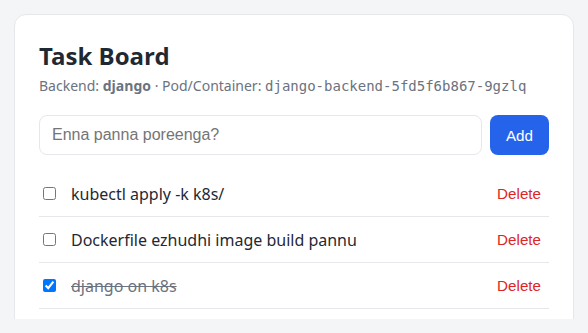
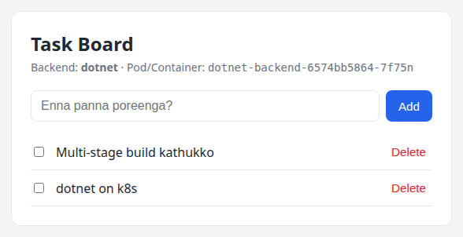

Django & .NET Full Stack — Beginner → Advanced
Container-na enna nu start panni, production-grade cluster varaikum — oru real project-oda.
Docker, Kubernetes pathi YouTube-la 100 video paathirupom. docker run theriyum, kubectl get pods theriyum. Aana interview-la "Pod CrashLoopBackOff-la irukku, eppadi debug pannuveenga?" nu ketta — blank aagidum. Problem enna na, naama command kathukittom, concept kathukala.
Indha guide-oda goal simple: oru real full-stack project-a eduthu, adha Docker-la pack panni, Kubernetes-la run panni, ovvoru step-layum "ulla enna nadakkudhu" nu purinjikradhu.
| Part | Topic | Level |
|---|---|---|
| Part 0 | Project overview, setup | Beginner |
| Part A | Container basics, Docker commands, Dockerfile, multi-stage | Beginner |
| Part B | Networking, volumes, Docker Compose, config | Intermediate |
| Part C | Image optimization, security, Docker internals, registry | Advanced |
| Part D | Kubernetes architecture, Pods, Deployments, Services, ConfigMaps | Beginner → Intermediate |
| Part E | Storage, StatefulSet, probes, Jobs, resources, Ingress, full deploy | Intermediate |
| Part F | Autoscaling, scheduling, security, Kustomize/Helm, debugging, production | Advanced |
| Part G | Hands-on labs, cheat sheets, interview Q&A | Practice |
Ovvoru chapter-layum indha boxes varum:
Tip
Practical shortcut or best practice.
Common Mistake
Neraya per panra thappu — idha avoid pannunga.
Interview Point
Interview-la kekka vaaipu irukka concept — senior-level answer.
Try Pannunga
Hands-on — padichadha udane terminal-la try pannunga. Padikkuradhu 30%, try panradhu 70%.
Golden Rule
Ovvoru YAML file-um, ovvoru Dockerfile line-um — "idhu illana enna aagum?" nu ungala neengale kelunga. Andha question-ku answer theriyum na, adhu purinjiduchu nu artham.
Oru simple Task Board app (todo list maadhiri) build pannirukkom. Simple-a irukkaradhu purposely — app logic easy-a irundha, focus fully Docker/Kubernetes mela irukkum.

Kubernetes-la run aagura Django stack. Header-la pod name theriyudhu — refresh panna vera pod name varum (load balancing!).
Same app-a rendu backend-la ezhudhirukkom:
Rendu backend-um exact same REST API expose pannum. Adhanala orey frontend (nginx + plain JavaScript) rendu backend-kum work aagum. Idhu real-world-la romba mukkiyamaana concept — API contract. Backend language enna nu frontend-ku kavalai illa.
| Method | Path | Body | Response |
|---|---|---|---|
| GET | /api/health |
— | {"status":"ok","backend":"django","hostname":"pod-name"} |
| GET | /api/ready |
— | 200 {"status":"ready"} or 503 (DB illana) |
| GET | /api/tasks |
— | [{id, title, done, createdAt}] |
| POST | /api/tasks |
{"title":"..."} |
201 + created task |
| PATCH | /api/tasks/{id} |
{"done":true} / {"title":"..."} |
updated task |
| DELETE | /api/tasks/{id} |
— | 204 |
Browser http://localhost:3000
│
┌─────────────▼──────────────┐
│ frontend (nginx :80) │ static HTML/JS serve pannum
│ /api/ ──proxy──┐ │ /api/ backend-ku forward
└───────────────────┼────────┘
│ http://backend:8000 (Docker DNS)
┌───────────────────▼────────┐
│ backend (Django/gunicorn) │
└───────────────────┬────────┘
│ db:5432
┌───────────────────▼────────┐ ┌──────────────────────┐
│ db (postgres:17-alpine) │◄─────│ volume: django-db-data│
└────────────────────────────┘ └──────────────────────┘
+ "migrate" one-shot container (migrations run panni exit)
Browser ── http://django.taskapp.local ──┐ ┌── http://dotnet.taskapp.local
▼ ▼
┌─────────────────────────────────┐
│ Ingress (nginx controller) │ host-based routing
└────────┬───────────────┬────────┘
Service │ │ Service
frontend-django ▼ ▼ frontend-dotnet
┌──────────────┐ ┌──────────────┐
│ nginx pod │ │ nginx pod │ SAME image,
│ BACKEND_URL= │ │ BACKEND_URL= │ different env
│ django:8000 │ │ dotnet:8080 │
└──────┬───────┘ └──────┬───────┘
Service ▼ ▼ Service
django-backend dotnet-backend
┌────────┐┌────────┐ ┌────────┐┌────────┐
│ pod 1 ││ pod 2 │◄─ HPA │ pod 1 ││ pod 2 │
└───┬────┘└───┬────┘ └───┬────┘└───┬────┘
└────┬────┘ └────┬────┘
▼ DB: tasks ▼ DB: dotnetdb
┌─────────────────────────────────────────────┐
│ postgres-0 (StatefulSet) + PVC (1Gi) │
│ headless Service "postgres" │
└─────────────────────────────────────────────┘
Jobs: django-migrate, dotnet-db-init (app start aagura munnaadi schema ready)
docker-k8s-fullstack/
├── django-backend/ # Django REST API
│ ├── config/ # settings.py (env-driven), urls.py, wsgi.py
│ ├── tasks/ # models.py, views.py, urls.py, migrations/
│ ├── Dockerfile
│ └── requirements.txt
├── dotnet-backend/ # .NET 10 Minimal API
│ ├── Program.cs # endpoints + --init-db mode
│ ├── Models/ Data/ # TaskItem, AppDbContext (EF Core)
│ ├── TaskApi.csproj
│ └── Dockerfile # multi-stage build
├── frontend/ # nginx + plain JS (rendu backend-kum common)
│ ├── nginx/default.conf.template
│ ├── public/ # index.html, app.js, styles.css
│ └── Dockerfile
├── compose.django.yaml # Django stack → http://localhost:3000
├── compose.dotnet.yaml # .NET stack → http://localhost:3001
├── k8s/ # Kubernetes manifests
│ ├── kustomization.yaml # kubectl apply -k k8s/
│ ├── 00-namespace.yaml
│ ├── postgres/ # Secret, ConfigMap, headless Service, StatefulSet
│ ├── django/ # ConfigMap, Secret, Job, Deployment, Service, HPA
│ ├── dotnet/ # Job, Deployment, Service
│ ├── frontend/ # 2 Deployments + Services (same image)
│ ├── ingress.yaml
│ └── extras/ # NetworkPolicy (advanced lab)
├── Makefile # shortcuts: make django-up, make k8s-deploy ...
└── docs/ # indha PDF-oda source (Markdown → PDF)
Indha PDF-la irukka code ellam real
Indha PDF-la "📄 file-path" nu potturukka code blocks ellam project folder-la irundhu direct-a include pannadhu (docs/build_pdf.py). Ellam Docker 29 + Kubernetes v1.37 (minikube)-la run panni verify pannadhu. Outputs-um real run-la irundhu eduthadhu.
| Tool | Edhukku | Check command |
|---|---|---|
| Docker Engine 24+ | Images build, containers run | docker version |
| Docker Compose v2+ | Multi-container local stack | docker compose version |
| kubectl | Kubernetes cluster-oda pesa | kubectl version --client |
| minikube | Laptop-la single-node K8s cluster | minikube version |
| make (optional) | Shortcut commands | make --version |
| Python 3.12 / .NET 10 SDK (optional) | Docker illama local-a run panna | python3 --version, dotnet --list-sdks |
Local language runtime thevaiyaa?
Thevai illa! Idhu dhaan Docker-oda power. Python, .NET SDK rendum Docker image-kulla irukku. Unga laptop-la Docker mattum irundha podhum. (Code edit panna IDE support-ku mattum local SDK useful.)
# Docker Engine (official convenience script)
curl -fsSL https://get.docker.com | sudo sh
sudo usermod -aG docker $USER # sudo illama docker run panna
newgrp docker # (or logout/login)
# kubectl
curl -LO "https://dl.k8s.io/release/$(curl -Ls https://dl.k8s.io/release/stable.txt)/bin/linux/amd64/kubectl"
sudo install -m 0755 kubectl /usr/local/bin/kubectl
# minikube
curl -LO https://storage.googleapis.com/minikube/releases/latest/minikube-linux-amd64
sudo install minikube-linux-amd64 /usr/local/bin/minikube
Mac-la: Docker Desktop + brew install kubectl minikube. Windows-la: Docker Desktop (WSL2 backend) + winget install Kubernetes.minikube.
docker group = root access
docker group-la irukka user effectively root maadhiri — docker run -v /:/host panni full filesystem access pannalaam. Personal laptop-ku OK, shared server-la yosichu pannunga.
$ docker version --format '{{.Server.Version}}'
29.8.0
$ docker compose version
Docker Compose version v5.5.1
$ kubectl version --client
Client Version: v1.37.0
$ minikube version
minikube version: v1.39.0
$ docker run --rm hello-world
Hello from Docker!
...
hello-world output vandhuchu na — Docker daemon running, image pull aagudhu, container run aagudhu. Setup done ✅.
cd docker-k8s-fullstack
# Docker Compose
make django-up # → http://localhost:3000
make dotnet-up # → http://localhost:3001
# Kubernetes
make k8s-start # minikube + ingress + metrics-server
make k8s-load # images build panni minikube-kulla load
make k8s-deploy # kubectl apply -k k8s/ + wait
make k8s-hosts # /etc/hosts-la add panna vendiya line
Ippo idhu ellam "magic" maadhiri theriyum. Indha guide mudiyumbodhu ovvoru command-um ulla enna pannudhu nu ungalukku theriyum. Start pannalaam 🚀
Container-na enna, image-na enna, Dockerfile eppadi ezhudhuradhu, namma Django & .NET apps-a eppadi pack panrom. Beginner level — aana "ulla enna nadakkudhu" skip panna maattom.
Beginner
Neenga oru Django app ezhudhureenga. Unga laptop-la Python 3.12, Django 5.2, PostgreSQL 17 irukku. Team-mate laptop-la Python 3.9. Server-la Python 3.10, vera OpenSSL version. Result?
Root cause: App mattum ship panrom — adhu depend panra environment (OS libraries, runtime version, config) ship panrathilla.
Container solution: App + adhoda runtime + libraries + config — ellathaiyum oru package (image)-a pack panni, endha machine-la Docker irundhaalum exact-a same maadhiri run pannalaam.
Virtual Machines Containers
┌────────┐ ┌────────┐ ┌────────┐ ┌────────┐ ┌────────┐ ┌────────┐
│ App A │ │ App B │ │ App C │ │ App A │ │ App B │ │ App C │
│ Libs │ │ Libs │ │ Libs │ │ Libs │ │ Libs │ │ Libs │
│Guest OS│ │Guest OS│ │Guest OS│ └────────┘ └────────┘ └────────┘
└────────┘ └────────┘ └────────┘ ┌──────────────────────────────┐
┌──────────────────────────────┐ │ Container Runtime (Docker) │
│ Hypervisor (VMware/KVM) │ ├──────────────────────────────┤
├──────────────────────────────┤ │ Host OS (Linux kernel) │
│ Host OS / Hardware │ ├──────────────────────────────┤
└──────────────────────────────┘ │ Hardware │
└──────────────────────────────┘
| Virtual Machine | Container | |
|---|---|---|
| Isolation | Full OS (own kernel) | Process-level (host kernel share) |
| Size | GBs | MBs (namma frontend: 73.6MB) |
| Boot time | Minutes | Milliseconds – seconds |
| Density | Oru server-la 10–20 VMs | Oru server-la 100s of containers |
| Security boundary | Strong (hypervisor) | Weaker (same kernel) |
Interview Point: Container = lightweight VM ah?
Illa. Container oru isolated process — host kernel-a share pannum. Linux kernel features namespaces (enna paakalaam — PID, network, filesystem isolation) and cgroups (evlo use pannalaam — CPU, memory limit) use panni isolation kudukkudhu. Container-kulla thani kernel illa. Adhanala dhaan Linux host-la Windows container run panna mudiyaadhu, and Mac/Windows-la Docker Desktop ulla oru chinna Linux VM run pannudhu. Part C-la idha hands-on-a paapom.
Image = read-only template. App + dependencies + filesystem snapshot. Class maadhiri. Container = image-oda running instance. Object maadhiri. Orey image-la irundhu 10 containers start pannalaam. Registry = images store panra place. Docker Hub, GitHub Container Registry (ghcr.io), AWS ECR, Azure ACR.
Dockerfile ──docker build──► Image ──docker run──► Container (running process)
│ ▲
docker push │ │ docker pull
▼ │
Registry (Docker Hub / ECR / GHCR)
Programming analogy:
| Docker | Programming |
|---|---|
| Dockerfile | Source code |
docker build |
Compile |
| Image | Compiled binary / Class |
docker run |
Execute / new Object() |
| Container | Running process / Object instance |
| Registry | npm / PyPI / NuGet repository |
docker command type pannumbodhu enna nadakkudhu?
docker CLI ──REST API──► dockerd (Docker daemon) ──gRPC──► containerd ──► containerd-shim ──► runc
(unga terminal) via /var/run/docker.sock (image pull, (container (OCI runtime:
network, lifecycle) namespaces +
volumes, build) cgroups setup
panni process start)
Interview Point: Kubernetes Docker-a remove pannidichaa?
Kubernetes 1.24-la dockershim remove aachu — adhaavadhu kubelet Docker daemon-oda direct-a pesuradhu nirthiduchu. Ippo kubelet CRI (Container Runtime Interface) moolama containerd or CRI-O-oda pesum. Aana Docker build panna images OCI standard — adhanala adhe images Kubernetes-la perfect-a run aagum. Docker as a build tool still standard; as a K8s runtime thevai illa.
Beginner
$ docker run -d --name web -p 8080:80 nginx:1.27-alpine
Unable to find image 'nginx:1.27-alpine' locally
1.27-alpine: Pulling from library/nginx
...
Status: Downloaded newer image for nginx:1.27-alpine
a3f1c9e2b7d4...
Indha oru line-la enna nadandhuchu:
nginx:1.27-alpine image irukka nu check → illa-p 8080:80 → host port 8080 → container port 80 map-d → background (detached)-la startBrowser-la http://localhost:8080 open pannunga — nginx welcome page ✅.
| Flag | Meaning |
|---|---|
-d |
Detached — background-la run |
--name web |
Container-ku peru (illana random name: quirky_turing) |
-p 8080:80 |
HOST:CONTAINER port mapping |
-e KEY=value |
Environment variable |
-v vol:/path |
Volume mount |
--rm |
Container stop aana auto delete |
-it |
Interactive + TTY (shell-ku) |
docker ps # running containers
docker ps -a # stopped containers-um
docker logs web # stdout/stderr logs
docker logs -f --tail 50 web # follow (tail -f maadhiri)
docker exec -it web sh # running container-kulla shell
docker stop web # SIGTERM → 10s wait → SIGKILL
docker start web # stopped container-a thirumba start
docker rm web # delete (stop aagirukkanum; -f force)
docker images # local images
docker rmi nginx:1.27-alpine # image delete
docker inspect web # full JSON details (IP, mounts, env...)
docker stats # live CPU/memory usage
docker system df # disk usage
docker system prune # unused containers/networks/images clean
docker create docker start
Image ─────────────────► Created ───────────► Running ◄──────┐
│ │ │ docker start /
docker stop │ │ process │ restart policy
(SIGTERM) ▼ ▼ exits │
Exited ────────┘
│
docker rm ▼
(deleted)
Common Mistake: Container udane exit aagudhu
docker run ubuntu → container start aagi udane Exited (0). Yen? Container main process (PID 1) mudinja, container mudinjidum. Ubuntu image default command bash — TTY illama bash udane exit aagum. Container oru VM illa, "on-la" irukka adhu oru long-running process venum (nginx, gunicorn, dotnet). Shell venum na: docker run -it ubuntu bash.
Try Pannunga
docker run -d --name web -p 8080:80 nginx:1.27-alpine
docker exec -it web sh
# container-kulla:
ps aux # PID 1 = nginx master. Vera process-e illa!
hostname # container ID
echo "<h1>Vanakkam</h1>" > /usr/share/nginx/html/index.html
exit
curl localhost:8080 # Vanakkam
docker rm -f web && docker run -d --name web -p 8080:80 nginx:1.27-alpine
curl localhost:8080 # Vanakkam poiduchu! Container filesystem ephemeral.
Beginner
Dockerfile = image build panra recipe. Ovvoru instruction-um oru layer create pannum (most of them).
| Instruction | Enna pannum | Example |
|---|---|---|
FROM |
Base image. Ellam Dockerfile-um idhula start. | FROM python:3.12-slim |
WORKDIR |
Working directory set (illana create) | WORKDIR /app |
COPY |
Host files → image | COPY requirements.txt . |
ADD |
COPY + URL/tar extract. Normally COPY use pannunga. | |
RUN |
Build time-la command run → result layer-a save | RUN pip install -r requirements.txt |
ENV |
Environment variable (build + runtime) | ENV PYTHONUNBUFFERED=1 |
ARG |
Build-time variable mattum | ARG VERSION=1.0 |
EXPOSE |
Documentation — "indha port listen pannum". Port publish pannadhu! | EXPOSE 8000 |
USER |
Idhukku apram vara commands + runtime endha user | USER 10001 |
CMD |
Default command (override pannalaam) | CMD ["gunicorn", "..."] |
ENTRYPOINT |
Fixed executable; CMD/args adhuku arguments | ENTRYPOINT ["dotnet", "TaskApi.dll"] |
HEALTHCHECK |
Container health check command |
📄 django-backend/Dockerfile
# ---- Base image: slim = chinna size, debian based (psycopg binary wheel work aagum)
FROM python:3.12-slim
# .pyc files ezhudhadha, logs buffer pannama udane stdout-ku anuppu
ENV PYTHONDONTWRITEBYTECODE=1 \
PYTHONUNBUFFERED=1
WORKDIR /app
# Layer caching trick: requirements mattum mudhalla copy. Code maarinaalum
# requirements maaralana indha pip install layer cache-la irundhu varum.
COPY requirements.txt .
RUN pip install --no-cache-dir -r requirements.txt
COPY . .
# Root-a run panna koodadhu — fixed UID kudutha K8s runAsUser-oda match pannalaam
RUN useradd --uid 10001 --no-create-home --shell /usr/sbin/nologin appuser
USER 10001
EXPOSE 8000
# CMD = default command. Compose/K8s-la migrate job-ku idha override pannuvom.
CMD ["gunicorn", "config.wsgi:application", "--bind", "0.0.0.0:8000", "--workers", "2", "--access-logfile", "-"]
FROM python:3.12-slim — Official Python image, slim variant (Debian minimal). python:3.12 full image 1.62GB, slim 179MB (real docker images output). Alpine innum chinnadhu, aana musl libc — sila Python wheels (psycopg binary maadhiri) work aagaadhu / compile panna vendi varum. Slim = safe default for Python.
ENV PYTHONDONTWRITEBYTECODE=1 PYTHONUNBUFFERED=1 — .pyc files ezhudha vendaam (container-la useless). Unbuffered = print/logs udane stdout-ku pogum — illana docker logs-la logs delay-a varum or crash aana poidum.
COPY requirements.txt . then RUN pip install — idhu dhaan layer caching trick (adutha section).
COPY . . — Full source code. .dockerignore-la irukka files (.venv, __pycache__, db.sqlite3) skip aagum.
RUN useradd --uid 10001 ... + USER 10001 — Root-a run panna koodadhu. App-la security hole irundhaa attacker container-la root-a iruppaan. Fixed UID (10001) kudutha Kubernetes runAsUser: 10001 match pannalaam.
EXPOSE 8000 — Documentation mattum. Actual publish -p or Compose ports:-la.
CMD [...] — gunicorn (production WSGI server) start. runserver production-ku illa — single-threaded, debug purpose mattum.
Ovvoru instruction-um oru layer. Docker build pannumbodhu, instruction + input files maaralana, previous build-oda layer-a reuse pannum. Oru layer maarina, adhukku keela irukka ellam layers-um rebuild aagum.
❌ BAD ORDER ✅ GOOD ORDER (namma Dockerfile)
FROM python:3.12-slim FROM python:3.12-slim
WORKDIR /app WORKDIR /app
COPY . . ← code maarina COPY requirements.txt . ← rarely changes
RUN pip install ... ← ithuvum rerun RUN pip install ... ← CACHED ✅
(every code change = 1-2 min) COPY . . ← code change → idhu mattum
(every code change = 2 sec)
Real output — views.py maathi rebuild pannumbodhu:
#6 [2/6] WORKDIR /app
#6 CACHED
#7 [3/6] COPY requirements.txt .
#7 CACHED
#8 [4/6] RUN pip install --no-cache-dir -r requirements.txt
#8 CACHED
#9 [5/6] COPY . . ← idhu mattum rerun
docker history-la layers & size paakalaam:
$ docker history taskapp/django-backend:1.0 --format '{{.Size}}\t{{.CreatedBy}}'
0B CMD ["gunicorn" "config.wsgi:application" "-…
0B EXPOSE [8000/tcp]
0B USER 10001
49.2kB RUN /bin/sh -c useradd --uid 10001 --no-crea…
123kB COPY . . # buildkit
69.5MB RUN /bin/sh -c pip install --no-cache-dir -r…
12.3kB COPY requirements.txt . # buildkit
8.19kB WORKDIR /app
pip install layer 69.5MB — idhu cache aagaradhu dhaan periya win. Code (COPY . .) verum 123kB.
Rule of thumb
Dockerfile-la rarely changing → top, frequently changing → bottom. OS packages → language deps → source code.
docker build . pannumbodhu, current folder full-a (build context) daemon-ku anuppum. .venv (500MB), .git, node_modules ellam pogum — slow, and secrets leak aagalaam.
📄 django-backend/.dockerignore
__pycache__/
*.pyc
.venv/
db.sqlite3
.env
Secrets image-la poga koodadhu
.env file .dockerignore-la illana COPY . . adha image-la podum. Image push pannina, yaar pull pannaalum unga secrets paakalaam. docker history and layer extract panni deleted files-a kooda recover pannalaam — later layer-la RUN rm .env pannaalum previous layer-la irukkum!
| CMD | ENTRYPOINT | |
|---|---|---|
| Purpose | Default command | Fixed executable |
docker run image xyz |
xyz CMD-a replace pannum |
xyz ENTRYPOINT-ku argument-a add aagum |
Compose command: |
CMD replace | ENTRYPOINT-ku args |
K8s command: |
— | ENTRYPOINT replace |
K8s args: |
CMD replace | — |
Namma project-la rendu style-um use pannirukkom — purposely:
CMD ["gunicorn", ...] mattum. Migrate Job-la command: ["python", "manage.py", "migrate"] — full-a replace.ENTRYPOINT ["dotnet", "TaskApi.dll"]. DB init-ku args: ["--init-db"] mattum kudukkurom → dotnet TaskApi.dll --init-db.# Try pannunga:
docker run --rm taskapp/django-backend:1.0 python --version # CMD replaced
# Python 3.12.15
docker run --rm --entrypoint sh taskapp/dotnet-backend:1.0 -c 'id' # ENTRYPOINT override
# uid=1654(app) gid=1654(app) groups=1654(app)
CMD ["gunicorn", "config.wsgi:application"] # exec form ✅ gunicorn = PID 1
CMD gunicorn config.wsgi:application # shell form ❌ /bin/sh -c "..." = PID 1
Shell form-la /bin/sh PID 1 aagum. docker stop / Kubernetes pod delete pannumbodhu SIGTERM PID 1-ku pogum — sh adha gunicorn-ku forward pannadhu. Result: graceful shutdown illa, 10s (Docker) / 30s (K8s) wait aagi SIGKILL — in-flight requests drop aagum. Eppovume exec form (JSON array) use pannunga.
Beginner → Intermediate
Compiled languages (.NET, Go, Java, Rust)-ku build panna SDK (compiler, build tools) venum. Run panna runtime mattum podhum. SDK image final image-la irundha:
sdk:10.0 = 1.3GB, aspnet:10.0 = 340MB)Multi-stage: Oru Dockerfile-la multiple FROM. Mudhal stage-la build, last stage-la output mattum copy.
📄 dotnet-backend/Dockerfile
# ======== Stage 1: build ========
# SDK image periyadhu (~800MB) — compile panna mattum use pannrom
FROM mcr.microsoft.com/dotnet/sdk:10.0 AS build
WORKDIR /src
# csproj mattum mudhalla → restore layer cache aagum (package maaralana re-download illa)
COPY TaskApi.csproj .
RUN dotnet restore
COPY . .
RUN dotnet publish -c Release -o /app/publish --no-restore
# ======== Stage 2: runtime ========
# ASP.NET runtime mattum (~230MB). SDK, source code final image-la varadhu.
FROM mcr.microsoft.com/dotnet/aspnet:10.0 AS runtime
WORKDIR /app
COPY --from=build /app/publish .
# .NET 8+ images-la `app` user already irukku (UID 1654), default port 8080
USER $APP_UID
EXPOSE 8080
# ENTRYPOINT fixed; `docker run image --init-db` nu kudutha adhu argument-a add aagum
ENTRYPOINT ["dotnet", "TaskApi.dll"]
Stage "build" (sdk:10.0, 1.3GB) Stage "runtime" (aspnet:10.0)
┌────────────────────────────┐ ┌────────────────────────────┐
│ .NET SDK, MSBuild, NuGet │ │ ASP.NET Core runtime │
│ source code (*.cs) │ COPY │ /app/TaskApi.dll + deps │
│ obj/, bin/, NuGet cache │ ──--from──► │ │
│ /app/publish/ ◄── output │ build │ USER app (1654) │
└────────────────────────────┘ └────────────────────────────┘
thrown away 🗑️ final image: 350MB
COPY TaskApi.csproj . + RUN dotnet restore — Same caching trick. NuGet packages restore layer .csproj maarina mattum rerun.
dotnet publish --no-restore — Release build, already restore pannadhaala thirumba pannadhu.
COPY --from=build /app/publish . — Previous stage-la irundhu compiled output mattum.
USER $APP_UID — Microsoft .NET 8+ images-la app user built-in (UID 1654). Default port-um 8080 (non-root user 1024-ku keela port bind panna mudiyaadhu).
Innum chinnadha venum na
mcr.microsoft.com/dotnet/aspnet:10.0-alpine — Alpine based, 177MB (340MB-la irundhu ~half)10.0-noble-chiseled — Ubuntu chiseled: shell-e illa, package manager illa (distroless maadhiri), non-root default. 180MB, very secure.PublishAot) — runtime-deps image + single native binary.Trade-off: shell illana docker exec ... sh panna mudiyaadhu — debugging-ku kubectl debug (Part F) use pannanum.
Python-ku multi-stage edhukku? C extensions compile panna gcc, libpq-dev venum na — builder stage-la wheels build panni, final slim stage-la wheels mattum install. Namma project-la psycopg[binary] pre-built wheel use panradhaala thevai padala.
Beginner
Docker/K8s-ku "container-friendly" app eppadi ezhudhanum? 12-Factor App principles — mukkiyamaa:
📄 django-backend/config/settings.py
import os
from pathlib import Path
BASE_DIR = Path(__file__).resolve().parent.parent
# 12-factor style: ellame environment variable-la irundhu. Docker/K8s-la
# ConfigMap & Secret moolama idha inject pannuvom.
SECRET_KEY = os.environ.get("SECRET_KEY", "dev-only-insecure-key")
DEBUG = os.environ.get("DEBUG", "0") == "1"
# K8s probes pod IP-a Host header-a anuppum (eg: 10.244.0.12:8000). Specific
# hosts mattum allow panna probes 400 DisallowedHost vaangum.
ALLOWED_HOSTS = os.environ.get("ALLOWED_HOSTS", "*").split(",")
INSTALLED_APPS = [
"django.contrib.contenttypes",
"tasks",
]
MIDDLEWARE = [
"django.middleware.security.SecurityMiddleware",
"django.middleware.common.CommonMiddleware",
]
ROOT_URLCONF = "config.urls"
WSGI_APPLICATION = "config.wsgi.application"
# DB_HOST illana local-a SQLite — docker illamaye `python manage.py runserver` try pannalaam
if os.environ.get("DB_HOST"):
DATABASES = {
"default": {
"ENGINE": "django.db.backends.postgresql",
"HOST": os.environ["DB_HOST"],
"PORT": os.environ.get("DB_PORT", "5432"),
"NAME": os.environ.get("DB_NAME", "tasks"),
"USER": os.environ.get("DB_USER", "tasks"),
"PASSWORD": os.environ.get("DB_PASSWORD", ""),
"CONN_MAX_AGE": 60,
"CONN_HEALTH_CHECKS": True,
}
}
else:
DATABASES = {
"default": {
"ENGINE": "django.db.backends.sqlite3",
"NAME": BASE_DIR / "db.sqlite3",
}
}
USE_TZ = True
TIME_ZONE = "UTC"
# Container logs stdout-ku poganum — `docker logs` / `kubectl logs` adha thaan padikkum
LOGGING = {
"version": 1,
"disable_existing_loggers": False,
"handlers": {"console": {"class": "logging.StreamHandler"}},
"root": {"handlers": ["console"], "level": os.environ.get("LOG_LEVEL", "INFO")},
}
Key points:
os.environ-la irundhu. Compose-la environment:, K8s-la ConfigMap + Secret. Code-la oru password-um illa.ALLOWED_HOSTS = "*" default — K8s probes pod IP-a Host header-a anuppum. Specific domain mattum vecha probes 400 Bad Request (DisallowedHost) vaangi pod never Ready aagum. Real-world-la neraya per maattikira trap idhu!DB_HOST illana SQLite — Docker illama python manage.py runserver quick test-ku.CONN_MAX_AGE=60 + CONN_HEALTH_CHECKS — DB connection reuse; dead connection-a detect pannum (Postgres pod restart aana useful).📄 django-backend/tasks/views.py
import json
import socket
from django.db import DatabaseError
from django.http import HttpResponse, JsonResponse
from django.views.decorators.csrf import csrf_exempt
from django.views.decorators.http import require_GET, require_http_methods
from .models import Task
TITLE_MAX_LENGTH = Task._meta.get_field("title").max_length
def parse_json_body(request):
try:
body = json.loads(request.body or b"{}")
except json.JSONDecodeError:
return None
return body if isinstance(body, dict) else None
@require_GET
def health(request):
# Liveness probe — process uyiroda irukka nu mattum. DB check inga panna koodadhu,
# illana DB down aana ellam pods-um restart aagidum.
return JsonResponse({"status": "ok", "backend": "django", "hostname": socket.gethostname()})
@require_GET
def ready(request):
# Readiness probe — DB reachable + migration mudinjirukka nu check. Fail aana
# Service indha pod-ku traffic anuppadhu, aana pod-a restart pannadhu.
try:
Task.objects.exists()
except DatabaseError as error:
return JsonResponse({"status": "not-ready", "error": str(error)}, status=503)
return JsonResponse({"status": "ready"})
# JSON API mattum — session/cookie auth illa, adhanala CSRF exempt
@csrf_exempt
@require_http_methods(["GET", "POST"])
def task_list(request):
if request.method == "GET":
return JsonResponse([task.to_dict() for task in Task.objects.all()], safe=False)
body = parse_json_body(request)
if body is None:
return JsonResponse({"error": "Invalid JSON body"}, status=400)
title = str(body.get("title", "")).strip()
if not title:
return JsonResponse({"error": "title is required"}, status=400)
task = Task.objects.create(title=title[:TITLE_MAX_LENGTH])
return JsonResponse(task.to_dict(), status=201)
@csrf_exempt
@require_http_methods(["PATCH", "DELETE"])
def task_detail(request, pk):
try:
task = Task.objects.get(pk=pk)
except Task.DoesNotExist:
return JsonResponse({"error": "Task not found"}, status=404)
if request.method == "DELETE":
task.delete()
return HttpResponse(status=204)
body = parse_json_body(request)
if body is None:
return JsonResponse({"error": "Invalid JSON body"}, status=400)
if "title" in body:
title = str(body["title"]).strip()
if not title:
return JsonResponse({"error": "title cannot be empty"}, status=400)
task.title = title[:TITLE_MAX_LENGTH]
if "done" in body:
task.done = bool(body["done"])
task.save()
return JsonResponse(task.to_dict())
Rendu health endpoints yen? Idhu Kubernetes probes-ku design pannadhu (Part E-la deep-a):
| Endpoint | Check | Fail aana K8s enna pannum |
|---|---|---|
/api/health (liveness) |
Process respond pannudha | Container restart |
/api/ready (readiness) |
DB connect + table irukka | Traffic stop (restart illa) |
DB down aana — liveness-la DB check panna, ellam backend pods-um restart loop — DB thirumba vandhaalum restart storm. Readiness-la mattum DB check → pods alive-a irukkum, traffic mattum nirkum, DB vandha udane automatic-a resume.
hostname field — container-la socket.gethostname() = container ID (Docker) / pod name (K8s). Load balancing paakka idhu dhaan use pannrom.
📄 dotnet-backend/Program.cs
using Microsoft.EntityFrameworkCore;
using Npgsql;
using TaskApi.Data;
using TaskApi.Models;
var builder = WebApplication.CreateBuilder(args);
// Env variable `ConnectionStrings__Default` → config key `ConnectionStrings:Default`
var connectionString = builder.Configuration.GetConnectionString("Default")
?? throw new InvalidOperationException("ConnectionStrings__Default environment variable set pannala");
builder.Services.AddDbContext<AppDbContext>(options => options.UseNpgsql(connectionString));
var app = builder.Build();
// `dotnet TaskApi.dll --init-db` → table create panni exit. Compose-la one-shot service,
// K8s-la Job — app replicas start aagura munnaadi oru thadava mattum run aagum.
if (args.Contains("--init-db"))
{
using var scope = app.Services.CreateScope();
var db = scope.ServiceProvider.GetRequiredService<AppDbContext>();
await db.Database.EnsureCreatedAsync();
app.Logger.LogInformation("Database schema ready");
return;
}
// Liveness — DB-a touch pannadhu
app.MapGet("/api/health", () => Results.Ok(new
{
status = "ok",
backend = "dotnet",
hostname = Environment.MachineName,
}));
// Readiness — DB reachable + table irukka nu check
app.MapGet("/api/ready", async (AppDbContext db) =>
{
try
{
await db.Tasks.AnyAsync();
return Results.Ok(new { status = "ready" });
}
catch (NpgsqlException error)
{
return Results.Json(new { status = "not-ready", error = error.Message }, statusCode: StatusCodes.Status503ServiceUnavailable);
}
});
app.MapGet("/api/tasks", async (AppDbContext db) =>
await db.Tasks.OrderByDescending(t => t.CreatedAt).ToListAsync());
app.MapPost("/api/tasks", async (CreateTaskRequest request, AppDbContext db) =>
{
var title = request.Title?.Trim() ?? string.Empty;
if (title.Length == 0)
{
return Results.BadRequest(new { error = "title is required" });
}
var task = new TaskItem { Title = title[..Math.Min(title.Length, TaskItem.TitleMaxLength)] };
db.Tasks.Add(task);
await db.SaveChangesAsync();
return Results.Created($"/api/tasks/{task.Id}", task);
});
app.MapPatch("/api/tasks/{id:int}", async (int id, UpdateTaskRequest request, AppDbContext db) =>
{
var task = await db.Tasks.FindAsync(id);
if (task is null)
{
return Results.NotFound(new { error = "Task not found" });
}
if (request.Title is not null)
{
var title = request.Title.Trim();
if (title.Length == 0)
{
return Results.BadRequest(new { error = "title cannot be empty" });
}
task.Title = title[..Math.Min(title.Length, TaskItem.TitleMaxLength)];
}
if (request.Done is bool done)
{
task.Done = done;
}
await db.SaveChangesAsync();
return Results.Ok(task);
});
app.MapDelete("/api/tasks/{id:int}", async (int id, AppDbContext db) =>
{
var deleted = await db.Tasks.Where(t => t.Id == id).ExecuteDeleteAsync();
return deleted == 0
? Results.NotFound(new { error = "Task not found" })
: Results.NoContent();
});
app.Run();
ConnectionStrings__Default env var → .NET configuration ConnectionStrings:Default. Double underscore = nested key separator (Linux env vars-la : allowed illa).--init-db mode — Same image, different mode. Schema create panni exit. Compose-la one-shot service, K8s-la Job. App startup-la EnsureCreated panna, 2 replicas orey nerathula table create panna try panni race condition varum.app.MapGet(...). Chinna services-ku clean./api/health vs /api/ready design.EnsureCreated vs Migrations
Learning project-ku EnsureCreated() simple. Real .NET project-la EF Core Migrations (dotnet ef migrations add, migrationBundle) use pannunga — schema changes version-controlled-a irukkum. Django-la makemigrations/migrate already andha pattern.
📄 frontend/nginx/default.conf.template
# nginx official image start aagumbodhu /etc/nginx/templates/*.template-la irukka
# ${VAR}-a environment value-aala replace panni /etc/nginx/conf.d-la podum.
# Adhanala ore image-a Django-kum .NET-kum BACKEND_URL maathi use pannalaam.
server {
listen 80;
server_name _;
root /usr/share/nginx/html;
index index.html;
# Probes-ku — backend-a depend pannama nginx uyiroda irukka nu mattum
location = /healthz {
access_log off;
default_type text/plain;
return 200 "ok\n";
}
# Browser same origin-ku /api call pannum → nginx backend-ku forward pannum.
# Idhanala CORS problem-e illa.
location /api/ {
proxy_pass ${BACKEND_URL};
proxy_set_header Host $host;
proxy_set_header X-Real-IP $remote_addr;
proxy_set_header X-Forwarded-For $proxy_add_x_forwarded_for;
proxy_set_header X-Forwarded-Proto $scheme;
}
location / {
try_files $uri $uri/ /index.html;
}
}
📄 frontend/Dockerfile
FROM nginx:1.27-alpine
# Default BACKEND_URL — Compose/K8s-la env moolama override pannuvom
ENV BACKEND_URL=http://backend:8000
COPY nginx/default.conf.template /etc/nginx/templates/default.conf.template
COPY public/ /usr/share/nginx/html/
EXPOSE 80
Problem: Frontend Django backend-kum (backend:8000) .NET backend-kum (backend:8080) pesanum. Rendu image build pannanuma?
Solution: Official nginx image start aagumbodhu /etc/nginx/templates/*.template files-la ${VAR}-a envsubst panni /etc/nginx/conf.d/-la podum. So build once, configure at runtime — BACKEND_URL env mattum maathunga.
Same-origin proxy: Browser http://localhost:3000/api/tasks call pannum — same origin. nginx adha backend-ku forward pannum. Browser-ku backend URL theriyave theriyaadhu → CORS config thevai illa, backend public-a expose panna vendiyadhilla.
Interview Point: Build once, deploy many
Oru image-a dev → staging → prod promote pannanum; environment-ku environment rebuild panna koodadhu. Rebuild pannina, test panna image-um production image-um vera — "tested artifact" guarantee poidum. Config env vars / ConfigMaps moolama inject pannunga. Indha frontend image idhukku perfect example — K8s-la orey image 2 Deployments-la vera vera config-oda run aagudhu.
Try Pannunga — images build
cd docker-k8s-fullstack
docker build -t taskapp/django-backend:1.0 django-backend
docker build -t taskapp/dotnet-backend:1.0 dotnet-backend
docker build -t taskapp/frontend:1.0 frontend
docker images | grep taskapp
# taskapp/frontend 1.0 73.6MB
# taskapp/dotnet-backend 1.0 350MB
# taskapp/django-backend 1.0 261MB
views.py-la oru space add panni thirumba build pannunga — CACHED lines paarunga.
Containers thaniya irundha useless — avanga pesanum (networking), data save pannanum (volumes), ellathaiyum orey command-la start pannanum (Compose). Indha part mudinja namma full stack local-a run aagum.
Intermediate
Ovvoru container-kum thani network namespace — sontha IP, sontha localhost, sontha ports. Adhanala:
No.1 Beginner Mistake: localhost
Django container-la DB_HOST=localhost vecha — adhu Django container-oda localhost, Postgres container illa! Connection refused. Container-kulla localhost = andha container mattum. Vera container-a reach panna service/container name use pannunga (DB_HOST=db).
| Driver | Use case |
|---|---|
bridge (default) |
Single host-la containers. Virtual switch (docker0/br-xxx) |
host |
Container host network-ae use pannum — isolation illa, NAT illa (Linux mattum) |
none |
Network-e illa |
overlay |
Multi-host (Docker Swarm) |
macvlan |
Container-ku physical network-la real MAC/IP |
Idhu dhaan mukkiyamaana difference:
Default bridge |
User-defined bridge (Compose create pannradhu) | |
|---|---|---|
| DNS by container name | ❌ Illa (IP mattum) | ✅ Built-in DNS (127.0.0.11) |
| Isolation | Ellam containers orey network | Network-wise isolate |
| Connect/disconnect live | ❌ | ✅ docker network connect |
Real output — namma Django stack-la:
$ docker network ls
NAME DRIVER
bridge bridge ← default
django-stack_default bridge ← Compose auto-create (project name + _default)
dotnet-stack_default bridge
$ docker exec django-stack-frontend-1 getent hosts backend db
172.18.0.3 backend backend
172.18.0.2 db db
$ docker exec django-stack-frontend-1 cat /etc/resolv.conf | grep nameserver
nameserver 127.0.0.11 ← Docker embedded DNS server
$ docker run --rm alpine:3.20 getent hosts django-stack-backend-1
(nothing — default bridge-la DNS illa)
Host (unga laptop) Container network (172.18.0.0/16)
┌──────────────────────────────┐ ┌──────────────────────────────────────┐
│ localhost:3000 ──iptables────┼──DNAT─►│ frontend 172.18.0.4:80 │
│ │ │ │ http://backend:8000 (DNS) │
│ (8000, 5432 publish pannala │ │ ▼ │
│ → host-la irundhu reach │ │ backend 172.18.0.3:8000 │
│ panna mudiyaadhu ✅ secure) │ │ │ db:5432 │
└──────────────────────────────┘ │ ▼ │
│ db 172.18.0.2:5432 │
└──────────────────────────────────────┘
ports: "3000:80" → host 3000 → container 80. Docker iptables NAT rules create pannum.EXPOSE-um, ports publish pannaadha containers-um network-kulla mattum reachable.0.0.0.0 vs 127.0.0.1
"3000:80" = 0.0.0.0:3000 — unga laptop-oda ellam network interfaces-la open (cafe WiFi-la irukka vera per access pannalaam!). Local mattum venum na: "127.0.0.1:3000:80". Also, app container-kulla 127.0.0.1-la listen pannina veliya irundhu reach aagaadhu — adhanala gunicorn --bind 0.0.0.0:8000.
Try Pannunga — manual network
docker network create labnet
docker run -d --name pg --network labnet -e POSTGRES_PASSWORD=pw postgres:17-alpine
docker run --rm --network labnet postgres:17-alpine pg_isready -h pg
# pg:5432 - accepting connections ← name-la DNS resolve aachu
docker run --rm postgres:17-alpine pg_isready -h pg
# pg:5432 - no response ← default bridge, DNS illa
docker rm -f pg && docker network rm labnet
Intermediate
Image layers read-only. Container start aagumbodhu mela oru thin writable layer add aagum (OverlayFS). Container delete → writable layer delete → data gone.
┌───────────────────────────────┐
│ Container writable layer │ ← container delete aana POIDUM
├───────────────────────────────┤
│ Image layer: COPY . . │ ┐
│ Image layer: pip install │ │ read-only, ella containers-um share
│ Image layer: python:3.12-slim │ ┘
└───────────────────────────────┘
+ /var/lib/postgresql/data ──mount──► Volume (container-ku veliya, persist aagum)
| Type | Syntax | Data enga | Use case |
|---|---|---|---|
| Named volume | pgdata:/var/lib/postgresql/data |
Docker manage (/var/lib/docker/volumes/) |
DB data, production |
| Bind mount | ./src:/app |
Host-la specific folder | Development (hot reload) |
| tmpfs | --tmpfs /tmp |
RAM mattum | Temp files, secrets |
$ docker volume ls | grep stack
django-stack_django-db-data
dotnet-stack_dotnet-db-data
$ docker volume inspect django-stack_django-db-data --format '{{.Mountpoint}}'
/var/lib/docker/volumes/django-stack_django-db-data/_data
Development-la bind mount
Code maathina ovvoru thadavaiyum rebuild venaam na:
backend:
volumes:
- ./django-backend:/app
command: ["python", "manage.py", "runserver", "0.0.0.0:8000"]
Try Pannunga — persistence prove pannunga
make django-up
curl -X POST localhost:3000/api/tasks -H 'Content-Type: application/json' -d '{"title":"persist aaguma?"}'
docker compose -f compose.django.yaml down # containers delete, volume irukkum
make django-up
curl localhost:3000/api/tasks # task innum irukku ✅
docker compose -f compose.django.yaml down -v # -v = volumes-um delete ⚠️
make django-up
curl localhost:3000/api/tasks # [] — data gone
# Volume-a tar file-a backup (temporary alpine container use panni)
docker run --rm -v django-stack_django-db-data:/data -v "$PWD":/backup alpine:3.20 \
tar czf /backup/pgdata.tgz -C /data .
DB-ku file-level copy-a vida logical dump better (consistent):
docker compose -f compose.django.yaml exec db pg_dump -U tasks tasks > backup.sql
Intermediate
4 containers, 1 network, 1 volume, env vars, startup order — ellathaiyum docker run commands-a type panna paithiyam pidikkum. Compose = YAML-la declare pannu, docker compose up pannu.
📄 compose.django.yaml
# Run: docker compose -f compose.django.yaml up --build
# Open: http://localhost:3000
name: django-stack
x-django-backend: &django-backend
build: ./django-backend
image: taskapp/django-backend:1.0
environment:
DB_HOST: db # service name = DNS name (compose network-la)
DB_NAME: tasks
DB_USER: tasks
DB_PASSWORD: tasks-password
SECRET_KEY: compose-dev-secret
DEBUG: "0"
services:
db:
image: postgres:17-alpine
environment:
POSTGRES_DB: tasks
POSTGRES_USER: tasks
POSTGRES_PASSWORD: tasks-password
volumes:
- django-db-data:/var/lib/postgresql/data
healthcheck:
test: ["CMD-SHELL", "pg_isready -U tasks -d tasks"]
interval: 5s
timeout: 3s
retries: 10
# One-shot container: migrate panni exit aagum (K8s Job maadhiri)
migrate:
<<: *django-backend
command: ["python", "manage.py", "migrate", "--noinput"]
depends_on:
db:
condition: service_healthy
backend:
<<: *django-backend
depends_on:
migrate:
condition: service_completed_successfully
healthcheck:
test: ["CMD", "python", "-c", "import urllib.request; urllib.request.urlopen('http://localhost:8000/api/ready')"]
interval: 10s
timeout: 3s
retries: 5
restart: unless-stopped
frontend:
build: ./frontend
image: taskapp/frontend:1.0
environment:
BACKEND_URL: http://backend:8000
ports:
- "3000:80" # host:container
depends_on:
backend:
condition: service_healthy
restart: unless-stopped
volumes:
django-db-data:
name: django-stack — Project name. Containers django-stack-backend-1, network django-stack_default, volume django-stack_django-db-data. Rendu compose files orey folder-la irukkradhaala, name kudukkala na rendum orey project-a treat aagi conflict aagum.
x-django-backend: &django-backend — x- prefix = Compose ignore pannum (extension field). &django-backend = YAML anchor. <<: *django-backend = andha block-a inga merge pannu. migrate-um backend-um same image + env share pannudhu — DRY.
image: + build: rendum — Build panni indha name/tag-la save pannum. Kubernetes-la adhe tag use pannuvom.
db service:
postgres:17-alpine — specific major version pin. postgres:latest vecha oru naal 17 → 18 aagi data format incompatible-a crash aagum.POSTGRES_* env — official image first start-la user/DB create pannum.healthcheck — pg_isready 5s-ku oru thadava. 10 times fail → unhealthy.migrate service — one-shot container:
command: CMD-a override → python manage.py migrate. Run aagi exit 0 aagum. Kubernetes Job-oda Compose version idhu.
depends_on with conditions — idhu dhaan startup order:
db ──(service_healthy)──► migrate ──(service_completed_successfully)──► backend ──(service_healthy)──► frontend
pg_isready pass exit code 0 /api/ready 200
| Condition | Wait pannradhu |
|---|---|
service_started (default) |
Container start aana podhum (app ready-a illa naalum) |
service_healthy |
Healthcheck pass aaganum |
service_completed_successfully |
Container exit code 0-la mudiyanum |
depends_on ≠ app ready
Plain depends_on: [db] = db container start aana udane backend start. Postgres ready aaga 2-3 sec aagum — andha gap-la backend connect fail → crash. Adhanala condition: service_healthy + healthcheck.
backend healthcheck — slim image-la curl illa, Python irukku → urllib use panni /api/ready call. Image-la enna tool irukko adha use pannunga.
restart: unless-stopped — crash aana auto restart; neenga manual-a stop pannina mattum restart illa.
📄 compose.dotnet.yaml
# Run: docker compose -f compose.dotnet.yaml up --build
# Open: http://localhost:3001
name: dotnet-stack
x-dotnet-backend: &dotnet-backend
build: ./dotnet-backend
image: taskapp/dotnet-backend:1.0
environment:
# Double underscore (__) = .NET config-la ":" (ConnectionStrings:Default)
ConnectionStrings__Default: Host=db;Port=5432;Database=tasks;Username=tasks;Password=tasks-password
services:
db:
image: postgres:17-alpine
environment:
POSTGRES_DB: tasks
POSTGRES_USER: tasks
POSTGRES_PASSWORD: tasks-password
volumes:
- dotnet-db-data:/var/lib/postgresql/data
healthcheck:
test: ["CMD-SHELL", "pg_isready -U tasks -d tasks"]
interval: 5s
timeout: 3s
retries: 10
# ENTRYPOINT ["dotnet","TaskApi.dll"] + command → "dotnet TaskApi.dll --init-db"
db-init:
<<: *dotnet-backend
command: ["--init-db"]
depends_on:
db:
condition: service_healthy
backend:
<<: *dotnet-backend
depends_on:
db-init:
condition: service_completed_successfully
restart: unless-stopped
# aspnet image-la curl/wget illa — adhanala healthcheck podala.
# K8s-la httpGet probe kubelet-ae pannum, image-la tool thevai illa.
frontend:
image: taskapp/frontend:1.0
build: ./frontend
environment:
BACKEND_URL: http://backend:8080
ports:
- "3001:80"
depends_on:
- backend
restart: unless-stopped
volumes:
dotnet-db-data:
command: ["--init-db"] — ENTRYPOINT dotnet TaskApi.dll irukkradhaala, command = arguments → dotnet TaskApi.dll --init-db.ConnectionStrings__Default — .NET nested config.--healthcheck mode ezhudhalaam. K8s-la idhu problem illa — kubelet thaane HTTP probe pannum, image-la tool thevai illa.docker compose -f compose.django.yaml up -d --build # build + background start
docker compose -f compose.django.yaml ps -a # status (exited one-shots-um)
docker compose -f compose.django.yaml logs -f backend # one service logs follow
docker compose -f compose.django.yaml exec db psql -U tasks # running container-la command
docker compose -f compose.django.yaml run --rm migrate # one-off run
docker compose -f compose.django.yaml config # merged final YAML (anchors resolve aagi)
docker compose -f compose.django.yaml down # stop + remove (volume irukkum)
docker compose -f compose.django.yaml down -v # volume-um delete
docker compose -f compose.django.yaml up -d --scale backend=3 # 3 backend containers
Real status output:
$ docker compose -f compose.django.yaml ps -a --format '{{.Name}}\t{{.Status}}\t{{.Ports}}'
django-stack-backend-1 Up 7 minutes (healthy) 8000/tcp
django-stack-db-1 Up 13 minutes (healthy) 5432/tcp
django-stack-frontend-1 Up 6 minutes 0.0.0.0:3000->80/tcp
django-stack-migrate-1 Exited (0) 7 minutes ago
migrate Exited (0) — expected ✅. Exit code 1 aana docker compose logs migrate paarunga.
Long -f flag type panna kashtama?
export COMPOSE_FILE=compose.django.yaml panna -f venaam. Or file-a compose.yaml nu rename pannunga (default name). Namma project-la rendu stack irukkradhaala explicit names.
Interview Point: Compose production-ku use pannalaama?
Single server, chinna apps-ku — aamaa, neraya per use panraanga. Aana Compose-la illadha vishayangal: multi-host scheduling, node fail aana vera node-la reschedule, built-in rolling updates with health gating, autoscaling, declarative self-healing (reconciliation). Idhellam venum na Kubernetes (or ECS, Nomad). Compose = local dev + simple deploys. Part D-la Compose → K8s mapping paapom.
Intermediate
| Method | Example | Note |
|---|---|---|
-e / environment: |
DB_HOST: db |
Simple, visible in docker inspect |
--env-file / env_file: |
env_file: .env |
.env git-la commit panna koodadhu |
Compose .env (auto) |
${POSTGRES_PASSWORD} in YAML |
Variable substitution YAML-la |
| Mounted file | -v ./config.json:/app/config.json:ro |
Complex config |
| Docker/Compose secrets | secrets: → /run/secrets/name |
File-a mount, env-la theriyaadhu |
ARG APP_VERSION=dev # build time mattum: docker build --build-arg APP_VERSION=1.2
ENV APP_VERSION=$APP_VERSION # runtime-ku venum na ENV-ku copy
Secrets ARG-la anuppa koodadhu
--build-arg NPM_TOKEN=xxx → docker history-la theriyum! Build time secret venum na BuildKit secret mount:
RUN --mount=type=secret,id=npm_token NPM_TOKEN=$(cat /run/secrets/npm_token) npm ci
docker build --secret id=npm_token,src=./token.txt . — layer-la save aagaadhu.
Compose files-la tasks-password plain-a irukku — local learning-ku mattum OK. Real project-la:
# compose.yaml
environment:
DB_PASSWORD: ${DB_PASSWORD:?DB_PASSWORD set pannunga} # .env or shell-la irundhu; illana error
# .env (gitignore-la!)
DB_PASSWORD=super-secret
Kubernetes-la Secrets object (Part D) — adhuvum base64 mattum, encryption illa nu paapom.
Image size kuraikradhu, secure-a build panradhu, container ulla actual-a enna nadakkudhu (namespaces, cgroups, OverlayFS), PID 1 signals, registry & tagging strategy. Interview-la senior-level questions inga dhaan varum.
Advanced
| Base | Size (docker images, Docker 29) |
Pros | Cons |
|---|---|---|---|
python:3.12 (full) |
1.62GB | Ellam tools irukku | Periyadhu, neraya CVEs |
python:3.12-slim |
179MB | glibc, wheels work aagum | Build tools illa |
python:3.12-alpine |
83.6MB | Romba chinnadhu | musl libc — wheels compile aagalaam, subtle bugs |
gcr.io/distroless/python3 |
chinnadhu | Shell/package manager illa | Debug kashtam |
aspnet:10.0 |
340MB | Official, easy | |
aspnet:10.0-alpine |
177MB | Half size | musl libc |
aspnet:10.0-noble-chiseled |
180MB | No shell, non-root default | Debug-ku kubectl debug |
scratch |
0 | Static binaries (Go, Rust) | Edhuvume illa |
RUN commands combine + cleanup same layer-la:
# ❌ cleanup separate layer-la — size kuraiyaadhu (previous layer-la data irukku)
RUN apt-get update
RUN apt-get install -y libpq5
RUN rm -rf /var/lib/apt/lists/*
# ✅ orey layer
RUN apt-get update \
&& apt-get install -y --no-install-recommends libpq5 \
&& rm -rf /var/lib/apt/lists/*
pip install --no-cache-dir — pip cache image-la venaam (namma Dockerfile-la irukku).
.dockerignore — context chinnadha.BuildKit cache mounts — CI-la speed:
RUN --mount=type=cache,target=/root/.cache/pip pip install -r requirements.txt
RUN --mount=type=cache,target=/root/.nuget/packages dotnet restore
| Practice | Namma project-la |
|---|---|
| Non-root user | ✅ Django UID 10001, .NET UID 1654 |
Specific version tags (:latest illa) |
✅ python:3.12-slim, postgres:17-alpine, nginx:1.27-alpine |
Digest pin (@sha256:...) — ultimate reproducibility |
❌ (learning-ku tags podhum) |
| Secrets image-la illa | ✅ ellam env vars |
| Minimal base | ✅ slim / alpine |
| Read-only root filesystem | ✅ K8s readOnlyRootFilesystem: true (backends) |
| Drop Linux capabilities | ✅ K8s capabilities.drop: [ALL] |
| Vulnerability scan | Neenga try pannunga ⬇️ |
# Docker Scout (Docker built-in)
docker scout quickview taskapp/django-backend:1.0
docker scout cves taskapp/django-backend:1.0
# Trivy (open source, CI-la popular)
docker run --rm -v /var/run/docker.sock:/var/run/docker.sock aquasec/trivy:latest \
image --severity HIGH,CRITICAL taskapp/django-backend:1.0
Interview Point: Container-la root-a run panna enna problem?
Container root = host root (user namespaces enable pannala na — default-a illa). App-la RCE (remote code execution) bug irundhaa, attacker container-la root. Appo kernel exploit / misconfigured mount (/var/run/docker.sock, host path) / privileged flag irundhaa container escape panni host-a capture pannalaam. Non-root + capabilities drop + read-only FS + seccomp = defense in depth. Kubernetes runAsNonRoot: true vecha, root-a start aaga try panra container-a kubelet reject pannum.
Advanced
Container = namespaces + cgroups + layered filesystem use panra oru normal Linux process. Proof paapom — namma running Django container-la.
$ docker inspect --format '{{.State.Pid}}' django-stack-backend-1
32285
$ ps -o pid,user,cmd -p 32285 # HOST-la run pannadhu
PID USER CMD
32285 10001 /usr/local/bin/python3.12 /usr/local/bin/gunicorn config.wsgi:application
Host-la ps pannaa gunicorn theriyudhu — VM-la irundha theriyaadhu. User 10001 = namma Dockerfile USER.
$ for ns in pid net mnt uts; do ... done
pid host=pid:[4026531836] container=pid:[4026533108]
net host=net:[4026531833] container=net:[4026533110]
mnt host=mnt:[4026531832] container=mnt:[4026532796]
uts host=uts:[4026531838] container=uts:[4026533106]
Ovvoru namespace ID-um vera — container thani "view" la irukku.
| Namespace | Isolate pannradhu | Effect |
|---|---|---|
| PID | Process IDs | Container-la gunicorn = PID 1; host-la 32285 |
| NET | Network stack | Sontha IP, ports, localhost |
| MNT | Mount points | Sontha root filesystem (image) |
| UTS | Hostname | hostname = container ID / pod name |
| IPC | Shared memory | |
| USER | UID mapping | Container root → host non-root (rootless mode) |
| CGROUP | cgroup view |
$ docker exec django-stack-backend-1 python -c "import os; print(sorted(int(p) for p in os.listdir('/proc') if p.isdigit()))"
[1, 7, 8, 350]
Container-la 4 processes mattum theriyudhu: PID 1 (gunicorn master), 7 & 8 (2 workers — --workers 2), 350 (indha python command). Host-la 100s of processes irukku — PID namespace hide pannudhu.
Kubernetes Pod = shared namespaces
K8s Pod-la multiple containers irundhaa avanga NET namespace share pannuvanga — adhanala orey pod-la containers localhost-la pesalaam. Pod oru "pause" container namespace hold pannum, matha containers adha join pannum.
$ docker info | grep -i cgroup
Cgroup Driver: systemd
Cgroup Version: 2
$ docker exec django-stack-backend-1 cat /sys/fs/cgroup/memory.max
max ← limit illa (compose-la set pannala)
$ docker run --rm --memory=50m --memory-swap=50m python:3.12-slim \
python -c "x = bytearray(200*1024*1024)"
$ echo $?
137 ← 128 + 9 (SIGKILL) = OOM killed
Exit code 137 = memory limit thaandi kernel OOM killer SIGKILL pannudhu. Kubernetes-la idhu OOMKilled status-a theriyum. Indha number nyabagam vechikonga — debugging-la romba varum.
| cgroup controller | Docker flag | K8s field |
|---|---|---|
| memory | --memory=256m |
resources.limits.memory |
| cpu | --cpus=0.5 |
resources.limits.cpu: 500m |
| cpu weight | --cpu-shares |
resources.requests.cpu |
| pids | --pids-limit=100 |
(kubelet podPidsLimit) |
Interview Point: Memory limit vs CPU limit thaandina enna aagum?
Memory = incompressible resource → limit thaandina kill (OOMKilled, exit 137). CPU = compressible → limit thaandina throttle mattum (slow aagum, kill aagaadhu). Adhanala CPU limits romba tight-a vecha latency spikes varum; sila teams CPU limits-e vekkaama requests mattum vekkuraanga.
Container view (merged) /app/manage.py /usr/local/bin/python /tmp/x
▲
│ OverlayFS mount
┌────────┴─────────────────────────────────────────────┐
│ upperdir (container writable layer) /tmp/x │ ← write ellam inga
├───────────────────────────────────────────────────────┤
│ lowerdir layer N: COPY . . /app/manage.py │
│ lowerdir layer 2: pip install site-packages/ │ read-only
│ lowerdir layer 1: python:3.12-slim /usr/local/bin/ │
└───────────────────────────────────────────────────────┘
RUN rm secret image size kuraikkaadhu, secret-um poagaadhu).Container stop pannumbodhu:
docker stop / kubectl delete pod
│
├──► SIGTERM → PID 1 (app: "new requests vaanga maaten, current mudichittu exit")
│
│ wait: Docker 10s / K8s terminationGracePeriodSeconds (default 30s)
│
└──► SIGKILL → PID 1 (force kill — in-flight requests drop)
Requirements for graceful shutdown:
Shell script entrypoint venum na exec use pannunga:
#!/bin/sh
python manage.py collectstatic --noinput
exec gunicorn config.wsgi:application # exec = shell process-a gunicorn replace pannum → PID 1
Zombie reaping — PID 1 child processes-a reap pannanum. App subprocess spawn pannina docker run --init (tini) use pannunga.
| Policy | Behaviour |
|---|---|
no (default) |
Restart illa |
on-failure[:N] |
Non-zero exit-la mattum, max N times |
always |
Eppovum (daemon restart aanaalum) |
unless-stopped |
Always, manual stop pannina thavira |
Kubernetes-la idhu Pod restartPolicy (Always / OnFailure / Never) + exponential backoff (10s, 20s, 40s ... max 5 min) = CrashLoopBackOff.
Advanced
ghcr.io / vibudesh / django-backend : 1.0.3 @sha256:a6e34c59...
───┬─── ───┬──── ──────┬────── ──┬── ───────┬────────
registry namespace repository tag digest (immutable content hash)
(default: docker.io) (default: latest)
nginx:1.27-alpine = actually docker.io/library/nginx:1.27-alpine.
:latest anti-pattern
:latest = "kadaisiya push pannadhu" — version illa. Problems: (1) yaar enna version run panraanga nu theriyaadhu, (2) rollback panna previous latest enna nu theriyaadhu, (3) K8s-la :latest tag-ku default imagePullPolicy: Always — ovvoru pod start-um registry hit.
Good tags:
| Tag | Example | Use |
|---|---|---|
| Semantic version | 1.4.2 |
Releases |
| Git SHA | sha-3f9c2a1 |
CI builds — exact commit trace |
| Both | 1.4.2 + sha-3f9c2a1 |
Best |
| Digest | @sha256:... |
Production deploy (tag move aanaalum maaradhu) |
# Docker Hub
docker login
docker tag taskapp/django-backend:1.0 <dockerhub-user>/django-backend:1.0
docker push <dockerhub-user>/django-backend:1.0
# GitHub Container Registry
echo $GITHUB_TOKEN | docker login ghcr.io -u <github-user> --password-stdin
docker tag taskapp/django-backend:1.0 ghcr.io/<github-user>/django-backend:1.0
docker push ghcr.io/<github-user>/django-backend:1.0
Private registry-la irundhu Kubernetes pull panna imagePullSecrets venum:
kubectl -n taskapp create secret docker-registry ghcr-cred \
--docker-server=ghcr.io --docker-username=<user> --docker-password=$GITHUB_TOKEN
spec:
imagePullSecrets:
- name: ghcr-cred
Mac M-series (ARM64)-la build panna image, x86 server-la exec format error-oda crash aagum. Solution — buildx multi-platform:
docker buildx create --use
docker buildx build --platform linux/amd64,linux/arm64 \
-t ghcr.io/<user>/django-backend:1.0 --push django-backend
Registry-la oru manifest list — pull pannumbodhu machine architecture-ku match aagura image automatic-a varum.
Try Pannunga
docker scout quickview or Trivy-la namma 3 images scan pannunga. Endha base image-la adhiga CVEs?python:3.12-alpine-ku maathi build pannunga. Size enna? psycopg[binary] install aagudha?mcr.microsoft.com/dotnet/aspnet:10.0-noble-chiseled-ku maathunga. Size compare pannunga. docker exec -it ... sh work aagudha? (Aagaadhu — shell illa!)docker run --rm --memory=50m ... OOM test-a neengale run panni exit code 137 paarunga.Docker oru machine-la containers run pannum. Kubernetes 100 machines-la 1000 containers-a manage pannum — crash aana restart, load adhigamaana scale, update pannumbodhu zero downtime. Architecture-la irundhu Pods, Deployments, Services, ConfigMaps varaikum — namma project manifests-oda.
Beginner
Compose-la namma stack super-a run aagudhu. Production-la enna problems varum?
| Problem | Compose | Kubernetes |
|---|---|---|
| Server crash aana? | App down ❌ | Vera node-la pods reschedule ✅ |
| Container crash? | restart: policy |
Restart + backoff + health-based ✅ |
| Traffic 10x aana? | Manual --scale |
HPA auto-scale ✅ |
| New version deploy | Down → up (downtime) | Rolling update, readiness-gated ✅ |
| Bad version? | Manual | kubectl rollout undo ✅ |
| Multiple servers | ❌ (single host) | Cluster of nodes ✅ |
| Service discovery | Docker DNS (single host) | Cluster DNS + load-balanced Services ✅ |
| Secrets/config | env/files | ConfigMap, Secret objects ✅ |
| Desired state enforce | ❌ | Controllers continuously reconcile ✅ |
Imperative (Docker): "Indha container-a start pannu. Ippo innoru start pannu." — Steps sollreenga. Declarative (Kubernetes): "Enakku 2 django pods eppovum running-a irukkanum." — Desired state sollreenga. Eppadi achieve pannanum nu K8s paathukkum.
┌──────────────── Reconciliation Loop (forever) ─────────────────┐
│ │
│ Desired state (YAML: replicas: 2) │
│ │ │
│ ▼ │
│ Observe actual state ──► Diff? ──► Act (create/delete pod) ──┘
│ (running pods: 1) (1 ≠ 2) (1 pod create)
Pod-a neenga delete pannaalum, node crash aanaalum — controller "actual ≠ desired" nu paathu fix pannum. Idhu dhaan self-healing. Namma test-la paathom:
$ kubectl -n taskapp delete pod django-backend-5fd5f6b867-nrb48
$ kubectl -n taskapp get pods -l app=django-backend
django-backend-5fd5f6b867-qv5hg 0/1 Running 0 4s ← new pod auto create!
django-backend-5fd5f6b867-w8pt6 1/1 Running 0 66s
| Compose | Kubernetes | Namma file |
|---|---|---|
services.backend (stateless) |
Deployment + Service | k8s/django/deployment.yaml, service.yaml |
services.db |
StatefulSet + headless Service + PVC | k8s/postgres/ |
services.migrate (one-shot) |
Job | k8s/django/migrate-job.yaml |
environment: |
ConfigMap + Secret | k8s/django/configmap.yaml, secret.yaml |
volumes: (named) |
PersistentVolumeClaim | volumeClaimTemplates |
ports: "3000:80" |
Ingress (or NodePort/LoadBalancer) | k8s/ingress.yaml |
healthcheck: |
liveness/readiness/startup probes | deployments-la |
depends_on: |
❌ illa! → readiness probes + initContainers + retries | |
--scale backend=3 |
replicas: 3 / HPA |
k8s/django/hpa.yaml |
| default network DNS | Cluster DNS (CoreDNS) | postgres, django-backend names |
depends_on Kubernetes-la illa
K8s-la startup order guarantee illa — ellam parallel-a start aagum. Design: apps retry pannanum, readiness probe dependency ready-a illana traffic vaangaadhu, initContainer wait pannum. Namma Jobs-la wait-for-postgres initContainer idhukku dhaan.
Beginner → Intermediate
┌──────────────────────────── CONTROL PLANE ─────────────────────────────┐
│ │
│ ┌──────────────┐ ┌──────────┐ ┌────────────┐ ┌───────────────┐ │
│ │kube-apiserver│◄──►│ etcd │ │ scheduler │ │ controller- │ │
│ │ (front door, │ │(key-value│ │(pod → node │ │ manager │ │
│ │ REST API, │ │ store — │ │ decide) │ │(Deployment,RS,│ │
│ │ auth, valid)│ │ ellam │ └─────┬──────┘ │ Job, Node... │ │
│ └──────┬───────┘ │ state) │ │ watch │ controllers) │ │
│ ▲ └──────────┘ ▼ └───────┬───────┘ │
│ └──────────────── ellam apiserver vazhiya ──────────┘ │
└─────────┬──────────────────────────────────────────────────────────────┘
│ (kubelet watch pannum)
┌─────────▼──────────── WORKER NODE ───────────┐ ┌──── WORKER NODE ────┐
│ kubelet ── CRI ──► containerd ──► runc │ │ kubelet │
│ (node agent: pods run pannu, probes, status)│ │ kube-proxy │
│ kube-proxy (Service IPs → iptables/IPVS) │ │ containerd │
│ ┌─────┐ ┌─────┐ ┌─────┐ │ │ ┌─────┐ ┌─────┐ │
│ │ pod │ │ pod │ │ pod │ │ │ │ pod │ │ pod │ │
│ └─────┘ └─────┘ └─────┘ │ │ └─────┘ └─────┘ │
└──────────────────────────────────────────────┘ └─────────────────────┘
| Component | Velai | Down aana? |
|---|---|---|
| kube-apiserver | Ellam requests-um idhu vazhiya. AuthN, AuthZ (RBAC), validation, admission. etcd-oda pesura orey component. | kubectl work aagaadhu; running pods continue aagum |
| etcd | Distributed key-value store — cluster-oda full state (ellam YAML objects) | Cluster brain gone — backup mukkiyam |
| kube-scheduler | Unscheduled pods-ku best node choose (resources, affinity, taints) | New pods Pending-la nirkum |
| kube-controller-manager | Controllers: Deployment, ReplicaSet, Job, Node, EndpointSlice... reconcile loops | Self-healing nirkum |
| kubelet | Ovvoru node-layum. Pods start, probes run, status report | Andha node pods-a manage panna mudiyaadhu |
| kube-proxy | Service virtual IPs → pod IPs (iptables/IPVS rules) | Service routing broken |
| CoreDNS | Cluster DNS (django-backend.taskapp.svc.cluster.local) |
Name resolution fail |
| CNI plugin | Pod networking (Calico, Cilium, Flannel; minikube-la kindnet) | Pods pesa mudiyaadhu |
Real minikube-la ivanga ellam pods-a dhaan run aagudhu:
$ kubectl -n kube-system get pods
coredns-559f6c778d-trjrc Running
etcd-minikube Running
kindnet-cbmwh Running ← CNI
kube-apiserver-minikube Running
kube-controller-manager-minikube Running
kube-proxy-sgxjd Running
kube-scheduler-minikube Running
metrics-server-768f9f6999-sxs4w Running ← addon (HPA-ku)
storage-provisioner Running ← PVC → hostPath volumes
kubectl apply -f deployment.yaml — step by step enna nadakkudhu 1. kubectl ──HTTPS──► apiserver : authenticate, authorize (RBAC), validate schema,
admission controllers (defaults, policies)
2. apiserver ──► etcd : Deployment object save
3. Deployment controller (watch) : "new Deployment!" → ReplicaSet create
4. ReplicaSet controller (watch) : "replicas 2, pods 0" → 2 Pod objects create (nodeName empty)
5. scheduler (watch) : unscheduled pods → filter + score nodes → nodeName set
6. kubelet on that node (watch) : "en node-ku pod!" → CRI → containerd: image pull, container start
7. kubelet : probes run → status (Running, Ready) apiserver-ku report
8. EndpointSlice controller : Ready pod IPs → Service endpoints-la add
9. kube-proxy (watch) : iptables rules update → Service IP traffic pod-ku pogum
Interview Point: Components direct-a pesuvaangala?
Illa. Ellam components-um apiserver-a mattum watch/update pannum — hub-and-spoke. Scheduler kubelet-ku "pod run pannu" nu sollaadhu; scheduler Pod object-la nodeName set pannum, kubelet adha watch panni paathu run pannum. Idhu dhaan K8s-oda loosely-coupled, level-triggered design. Oru component restart aanaalum, current state-a apiserver-la irundhu padichu continue pannum.
Beginner
make k8s-start
# = minikube start --driver=docker --cpus=2 --memory=4096
# minikube addons enable ingress
# minikube addons enable metrics-server
$ kubectl get nodes -o wide
NAME STATUS ROLES VERSION INTERNAL-IP OS-IMAGE CONTAINER-RUNTIME
minikube Ready control-plane v1.37.0 192.168.49.2 Debian GNU/Linux 12 (bookworm) containerd://2.3.4
minikube --driver=docker = oru Docker container-kulla full K8s node (control plane + worker). docker ps-la minikube container theriyum. Node-kulla runtime containerd — Docker illa! (Docker build panna images OCI standard, adhanala work aagum.)
| Local option | Note |
|---|---|
| minikube | Easy, addons (ingress, metrics-server, dashboard). Namma choice. |
| kind | K8s in Docker; multi-node easy; CI-la popular |
| k3d / k3s | Lightweight K8s |
| Docker Desktop K8s | One checkbox; Mac/Windows |
~/.kube/config-la clusters, users, contexts. minikube start automatic-a context add pannum.
kubectl config get-contexts
kubectl config use-context minikube
kubectl config set-context --current --namespace=taskapp # default namespace set — `-n taskapp` venaam
Wrong cluster-la delete!
Real job-la laptop-la dev, staging, prod contexts irukkum. kubectl delete prod-la run aaidum. Eppovume kubectl config current-context check pannunga; prompt-la context kaattura tools (kube-ps1, starship) use pannunga.
kubectl get pods # list
kubectl get pods -o wide # + node, IP
kubectl get pods -w # watch (live updates)
kubectl get all -n taskapp # common resources
kubectl get deploy django-backend -o yaml # full object (spec + status)
kubectl describe pod <name> # details + EVENTS (debug-ku No.1)
kubectl logs <pod> # logs; -f follow; --previous crashed container
kubectl logs deploy/django-backend # deployment-la oru pod-oda logs
kubectl exec -it <pod> -- sh # pod-kulla shell
kubectl port-forward svc/frontend-django 8080:80 # local port → service
kubectl apply -f file.yaml # create/update (declarative)
kubectl apply -k k8s/ # kustomize directory
kubectl delete -f file.yaml
kubectl explain deployment.spec.strategy # field documentation — offline docs!
kubectl api-resources # ellam resource types + short names
Short names: po (pods), deploy, svc, cm (configmap), ns, pvc, sts (statefulset), ing, hpa.
apiVersion: apps/v1 # API group/version (kubectl api-resources-la paakalaam)
kind: Deployment # object type
metadata: # identity
name: django-backend
namespace: taskapp
labels: # selectors-ku use aagum (key/value)
app: django-backend
annotations: {} # tools-ku metadata (select panna mudiyaadhu)
spec: # DESIRED state — neenga ezhudhuradhu
...
status: # ACTUAL state — K8s fill pannum (neenga ezhudha koodadhu)
...
Beginner
Pod = Kubernetes-la smallest deployable unit. Oru or adhukku mela containers, shared network (orey IP) + shared volumes.
┌─────────────── Pod (IP 10.244.0.20) ───────────────┐
│ ┌────────────────┐ ┌────────────────────┐ │
│ │ app container │◄──────►│ sidecar (optional) │ │ localhost-la pesalaam
│ │ :8000 │ shared │ log shipper/proxy │ │
│ └────────────────┘ vol └────────────────────┘ │
└────────────────────────────────────────────────────┘
# pod-demo.yaml
apiVersion: v1
kind: Pod
metadata:
name: demo
labels:
app: demo
spec:
containers:
- name: web
image: nginx:1.27-alpine
ports:
- containerPort: 80
kubectl apply -f pod-demo.yaml
kubectl get pod demo -o wide
kubectl port-forward pod/demo 8080:80 # browser: localhost:8080
kubectl logs demo
kubectl delete pod demo # pod gone — FOREVER. Yaarum recreate pannala!
| Phase | Meaning |
|---|---|
Pending |
Accept aachu, aana schedule aagala / image pull aagudhu |
Running |
Node-la bind, at least oru container running |
Succeeded |
Ellam containers exit 0 (Jobs) |
Failed |
At least oru container non-zero exit, restart illa |
Unknown |
Node-oda contact illa |
kubectl get pods STATUS column-la vara CrashLoopBackOff, ImagePullBackOff, ContainerCreating, OOMKilled — idhellam phase illa, container state reasons. Part F debugging chapter-la ovvonnum.
wait-for-postgres)initContainers with restartPolicy: Always.Interview Point: Bare Pod yen production-la use panna koodadhu?
Bare Pod-a yaarum manage pannala — node crash aanaalo, delete aanaalo, evicted aanaalo, recreate aagaadhu. Scaling, rolling update illa. Adhanala eppovume controllers use pannunga: stateless → Deployment, stateful → StatefulSet, per-node agent → DaemonSet, run-to-completion → Job/CronJob. Pod = "cattle", individual-a care panna koodadhu.
Beginner → Intermediate
Deployment (django-backend) ← neenga manage pannradhu: image, replicas, strategy
│ owns
├── ReplicaSet django-backend-5fd5f6b867 (current, replicas 2) ← pod template hash
│ ├── Pod django-backend-5fd5f6b867-9gzlq
│ └── Pod django-backend-5fd5f6b867-b7fsk
└── ReplicaSet django-backend-94664d8b (old, replicas 0) ← rollback-ku vechirukku
📄 k8s/django/deployment.yaml
apiVersion: apps/v1
kind: Deployment
metadata:
name: django-backend
namespace: taskapp
labels:
app: django-backend
spec:
replicas: 2
revisionHistoryLimit: 5 # `kubectl rollout undo`-ku evlo old ReplicaSets vechikanum
strategy:
type: RollingUpdate
rollingUpdate:
maxSurge: 1 # update-la 1 extra pod create pannalaam
maxUnavailable: 0 # ready pods count kuraiyave koodadhu → zero downtime
selector:
matchLabels:
app: django-backend # indha label irukka pods-a indha Deployment manage pannum
template:
metadata:
labels:
app: django-backend
spec:
securityContext:
runAsNonRoot: true
runAsUser: 10001 # Dockerfile-la create panna appuser UID
seccompProfile:
type: RuntimeDefault
containers:
- name: django
image: taskapp/django-backend:1.0
imagePullPolicy: IfNotPresent
ports:
- name: http
containerPort: 8000
envFrom:
- configMapRef:
name: django-config
- secretRef:
name: django-secret
env:
- name: DB_PASSWORD
valueFrom:
secretKeyRef:
name: postgres-secret
key: POSTGRES_PASSWORD
# Requests = scheduler guarantee panna vendiyadhu; limits = max allowed.
# Memory limit thaandina OOMKilled; CPU limit thaandina throttle mattum.
resources:
requests:
cpu: 100m
memory: 128Mi
limits:
cpu: 500m
memory: 256Mi
# Pod terminate aagumbodhu endpoints removal kube-proxy/ingress-ku reach aaga
# konjam time aagum. Adhukkulla SIGTERM vandha in-flight requests 502 aagum —
# 5s wait panni apram shutdown start.
lifecycle:
preStop:
sleep:
seconds: 5
startupProbe: # slow start apps-ku — idhu pass aagura varaikum liveness wait pannum
httpGet:
path: /api/health
port: http
periodSeconds: 2
failureThreshold: 30
livenessProbe: # fail aana → container RESTART
httpGet:
path: /api/health
port: http
periodSeconds: 10
failureThreshold: 3
readinessProbe: # fail aana → Service endpoints-la irundhu REMOVE (restart illa)
httpGet:
path: /api/ready
port: http
periodSeconds: 5
failureThreshold: 2
securityContext:
allowPrivilegeEscalation: false
readOnlyRootFilesystem: true
capabilities:
drop: ["ALL"]
volumeMounts:
- name: tmp # gunicorn worker heartbeat files /tmp-la ezhudhum
mountPath: /tmp
volumes:
- name: tmp
emptyDir: {}
Mukkiyamaana fields:
selector.matchLabels ↔ template.metadata.labels — Deployment endha pods tanakku sondham nu labels vechu dhaan kandupidikkum. Rendum match aaganum (illana apply error). Selector immutable — create aana apram maatha mudiyaadhu.
replicas: 2 — HPA irundhaa adhu idha override pannum.
strategy.rollingUpdate — maxSurge: 1, maxUnavailable: 0 = update-la 3 pods varaikum pogalaam (2+1), ready count 2-ku keela pogave koodadhu. New pod Ready aana apram dhaan old pod terminate. Default: 25% / 25%.
envFrom + env.valueFrom.secretKeyRef — ConfigMap-la ellam keys env-a; Postgres secret-la irundhu password mattum DB_PASSWORD-a rename panni. (Next chapters.)
resources, probes, securityContext — Part E & F-la deep-a.
$ kubectl -n taskapp get rs
NAME DESIRED CURRENT READY AGE
django-backend-5fd5f6b867 2 2 2 13m ← active
django-backend-94664d8b 0 0 0 12m ← old revision (rollback-ku)
dotnet-backend-6574bb5864 2 2 2 13m
$ kubectl -n taskapp get pods -l app=django-backend --show-labels
django-backend-5fd5f6b867-9gzlq 1/1 Running app=django-backend,pod-template-hash=5fd5f6b867
Pod name = <deployment>-<pod-template-hash>-<random>. pod-template-hash label ReplicaSets-a overlap aagaama vechikkum.
# Scale
kubectl -n taskapp scale deploy/django-backend --replicas=4
# Update (env change kooda new rollout trigger pannum — pod template maarudhu)
kubectl -n taskapp set env deploy/django-backend LOG_LEVEL=DEBUG
kubectl -n taskapp rollout status deploy/django-backend
# New image version
kubectl -n taskapp set image deploy/django-backend django=taskapp/django-backend:1.1
# History & rollback
kubectl -n taskapp rollout history deploy/django-backend
kubectl -n taskapp rollout undo deploy/django-backend # previous
kubectl -n taskapp rollout undo deploy/django-backend --to-revision=1
# Pause/resume (multiple changes orey rollout-la)
kubectl -n taskapp rollout pause deploy/django-backend
kubectl -n taskapp rollout resume deploy/django-backend
# Same spec, restart all pods (ConfigMap maathina apram)
kubectl -n taskapp rollout restart deploy/django-backend
Real rollout output (maxUnavailable: 0 — one by one):
Waiting for deployment "django-backend" rollout to finish: 1 out of 2 new replicas have been updated...
Waiting for deployment "django-backend" rollout to finish: 1 old replicas are pending termination...
deployment "django-backend" successfully rolled out
rollout undo + kubectl apply = confusion
rollout undo pannumbodhu real output-la indha warning vandhuchu:
"resource deployments/django-backend was previously managed with 'kubectl apply'. Rolling back will not update the kubectl.kubernetes.io/last-applied-configuration annotation..."
Artham: cluster-la old version, aana unga YAML file-la new version. Adutha kubectl apply thirumba new version-a deploy pannidum! Production-la rollback = git revert + apply (GitOps). rollout undo emergency-ku mattum.
| Strategy | Eppadi | Use |
|---|---|---|
RollingUpdate (default) |
Gradual replace | Most apps |
Recreate |
Ellam kill → new create (downtime) | 2 versions orey nerathula run aaga koodaadhu (DB schema incompatible) |
| Blue/Green | 2 Deployments, Service selector switch | Instant switch + rollback |
| Canary | Konjam % traffic new version-ku | Argo Rollouts, Flagger, service mesh |
Beginner → Intermediate
Pods ephemeral — recreate aana new IP. Frontend eppadi backend-a kandupidikkum? Service = stable virtual IP + DNS name + load balancing, label selector vechu pods-a track pannum.
frontend pod: http://django-backend:8000
│ CoreDNS: django-backend.taskapp.svc.cluster.local → 10.109.191.244 (ClusterIP)
▼
┌──────────────────────┐
│ Service django-backend│ selector: app=django-backend
│ ClusterIP 10.109... │ (virtual — kube-proxy iptables rules)
└─────┬──────────┬─────┘
▼ ▼ EndpointSlice: READY pods mattum
10.244.0.20:8000 10.244.0.21:8000
📄 k8s/django/service.yaml
# ClusterIP Service = stable virtual IP + DNS name "django-backend".
# Pods vandhu poanaalum (IP maarinaalum) indha name maaradhu.
apiVersion: v1
kind: Service
metadata:
name: django-backend
namespace: taskapp
spec:
type: ClusterIP
selector:
app: django-backend
ports:
- name: http
port: 8000 # Service port (client idha call pannum)
targetPort: http # container port name → 8000
| Field | Enga | Meaning |
|---|---|---|
containerPort: 8000 (name: http) |
Pod spec | App listen panra port (documentation + naming) |
targetPort: http |
Service | Traffic pod-la endha port-ku pogum (name or number) |
port: 8000 |
Service | Clients call panra Service port |
nodePort: 30080 |
Service (NodePort) | Ovvoru node-layum open aagura port (30000–32767) |
Named port (http) use pannaa — container port maarinaalum Service maatha vendaam.
$ kubectl -n taskapp describe svc django-backend
Selector: app=django-backend
Type: ClusterIP
IP: 10.109.191.244
Port: http 8000/TCP
TargetPort: http/TCP
Endpoints: 10.244.0.20:8000,10.244.0.21:8000 ← 2 ready pods
Endpoints: empty-a irundhaa → selector match aagala or pods Ready illa. Service work aagala na first check idhu dhaan.
| Type | Reach | Use |
|---|---|---|
| ClusterIP (default) | Cluster-kulla mattum | Internal services (namma ellam) |
| NodePort | <NodeIP>:30000-32767 |
Simple external access, testing |
| LoadBalancer | Cloud LB (AWS NLB/ELB, Azure LB) public IP | Production external (cloud) |
| ExternalName | DNS CNAME | External DB-ku alias |
Headless (clusterIP: None) |
DNS → pod IPs direct | StatefulSets (namma postgres) |
$ kubectl -n taskapp run dns-test --rm -i --restart=Never --image=busybox:1.36 -- \
sh -c 'nslookup django-backend; nslookup postgres; wget -qO- http://django-backend:8000/api/health'
Name: django-backend.taskapp.svc.cluster.local
Address: 10.109.191.244 ← ClusterIP (virtual)
Name: postgres.taskapp.svc.cluster.local
Address: 10.244.0.17 ← headless → POD IP direct
{"status": "ok", "backend": "django", "hostname": "django-backend-5fd5f6b867-9gzlq"}
DNS format: <service>.<namespace>.svc.cluster.local. Same namespace-la django-backend mattum podhum; vera namespace-la django-backend.taskapp.
$ for i in 1 2 3 4 5 6; do curl -s -H "Host: django.taskapp.local" http://$(minikube ip)/api/health | jq -r .hostname; done | sort | uniq -c
4 django-backend-5fd5f6b867-nrb48
2 django-backend-5fd5f6b867-w8pt6
Rendu pods-kum traffic pogudhu. kube-proxy iptables mode-la random selection per connection (round-robin illa) — adhanala 4/2 split.
Interview Point: ClusterIP-a ping panna reply varuma?
Varaadhu! ClusterIP oru virtual IP — endha network interface-layum illa. kube-proxy iptables/IPVS rules "indha IP:port-ku vara TCP/UDP packets-a indha pod IPs-ku DNAT pannu" nu mattum vechirukkum. ICMP (ping)-ku rule illa. Debug panna curl service:port use pannunga, ping illa.
Long-lived connections & load balancing
kube-proxy connection level-la balance pannum, request level illa. gRPC / HTTP/2 / DB connection pools — oru connection open panni adhulaye ellam requests anuppum → ellam traffic oru pod-ku. Solution: client-side LB, headless service + client balancing, or service mesh (Linkerd/Istio — L7 balancing).
Beginner → Intermediate
Image-la config hardcode panna koodadhu (build once, deploy many). K8s-la:
📄 k8s/django/configmap.yaml
# Non-secret config. Maathina pod restart pannanum (env vars start-la mattum read aagum):
# kubectl -n taskapp rollout restart deployment/django-backend
apiVersion: v1
kind: ConfigMap
metadata:
name: django-config
namespace: taskapp
data:
DB_HOST: postgres
DB_PORT: "5432"
DB_NAME: tasks
DB_USER: tasks
DEBUG: "0"
ALLOWED_HOSTS: "*"
LOG_LEVEL: INFO
📄 k8s/postgres/secret.yaml
# Secret = base64 encoded mattum, encryption illa! Real project-la idha git-la
# commit panna koodadhu — Sealed Secrets / External Secrets Operator use pannunga.
apiVersion: v1
kind: Secret
metadata:
name: postgres-secret
namespace: taskapp
type: Opaque
stringData: # stringData = plain text ezhudhalaam, K8s base64 pannidum
POSTGRES_USER: tasks
POSTGRES_PASSWORD: k8s-super-secret-password
POSTGRES_DB: tasks
# 1. Ellam keys env vars-a
envFrom:
- configMapRef:
name: django-config
- secretRef:
name: django-secret
# 2. Specific key, rename panni
env:
- name: DB_PASSWORD
valueFrom:
secretKeyRef:
name: postgres-secret
key: POSTGRES_PASSWORD
# 3. $(VAR) dependent env — munnaadi define panna var use panni
env:
- name: POSTGRES_PASSWORD
valueFrom: { secretKeyRef: { name: postgres-secret, key: POSTGRES_PASSWORD } }
- name: ConnectionStrings__Default
value: Host=postgres;...;Password=$(POSTGRES_PASSWORD)
# 4. Files-a mount (namma postgres init script)
volumes:
- name: init-scripts
configMap:
name: postgres-init
# → /docker-entrypoint-initdb.d/01-create-dotnet-db.sql
Method 3 real result:
$ kubectl -n taskapp exec deploy/dotnet-backend -- printenv ConnectionStrings__Default
Host=postgres;Port=5432;Database=dotnetdb;Username=tasks;Password=k8s-super-secret-password
Password orey place-la (postgres-secret) — Django, .NET, Postgres moonu-um adha reference pannudhu. Password rotate panna orey Secret update.
📄 k8s/postgres/init-configmap.yaml
# Postgres image /docker-entrypoint-initdb.d-la irukka .sql files-a FIRST TIME
# mattum (data folder empty-a irukkumbodhu) run pannum. .NET-ku thani DB create pannrom.
apiVersion: v1
kind: ConfigMap
metadata:
name: postgres-init
namespace: taskapp
data:
01-create-dotnet-db.sql: |
CREATE DATABASE dotnetdb;
ConfigMap data key = filename, value = file content. Volume-a mount panna directory-la files-a varum.
| Inject method | ConfigMap update pannina |
|---|---|
| env / envFrom | ❌ Pod restart pannura varaikum old value |
| Volume mount | ✅ ~1 min-la file update (kubelet sync) — app re-read pannanum |
Volume subPath mount |
❌ Update aagaadhu |
So env change-ku: kubectl rollout restart deploy/django-backend. Kustomize configMapGenerator name-la hash podum (django-config-7h2k9) — content maarina name maarum → Deployment auto rollout. Production pattern.
$ kubectl -n taskapp get secret postgres-secret -o jsonpath='{.data.POSTGRES_PASSWORD}'
azhzLXN1cGVyLXNlY3JldC1wYXNzd29yZA==
$ ... | base64 -d
k8s-super-secret-password
base64 = encoding, encryption illa
Secret read permission irukka yaarum decode pannalaam. Default-a etcd-la-um plain (base64) dhaan. Real protection:
get/list permission restrict.EncryptionConfiguration (EKS/AKS/GKE-la KMS integration).secret.yaml learning-ku mattum. Use: Sealed Secrets (encrypted YAML git-la safe), External Secrets Operator (AWS Secrets Manager / Azure Key Vault / Vault-la irundhu sync), SOPS./proc/*/environ-la leak aagaadhu).Try Pannunga
kubectl -n taskapp edit configmap django-config — LOG_LEVEL: DEBUG maathunga. kubectl exec deploy/django-backend -- printenv LOG_LEVEL — innum INFO! rollout restart panni thirumba check pannunga.kubectl -n taskapp create configmap demo --from-literal=COLOR=blue --dry-run=client -o yaml — YAML generate panna idhu shortcut.kubectl -n taskapp get endpointslices -l kubernetes.io/service-name=django-backend — replicas 4 aakki thirumba paarunga.Database-a K8s-la eppadi run panradhu (StatefulSet + PVC), health probes correct-a design panradhu, migrations-ku Jobs, resources & QoS, Ingress — kadaisiya full stack-a end-to-end deploy.
Intermediate
| Volume | Lifetime | Use | Namma project |
|---|---|---|---|
emptyDir |
Pod irukka varaikum | Scratch space, containers share | Backends /tmp (read-only root FS-ku) |
configMap / secret |
Object irukka varaikum | Config files | Postgres init script |
hostPath |
Node disk | Node agents (avoid for apps!) | — |
persistentVolumeClaim |
Pod-a vida independent | Databases, uploads | Postgres data |
Developer Cluster / Cloud
┌────────────────────┐ ┌──────────────────────────┐ ┌───────────────────┐
│ PVC │ bind │ PV │ │ Actual disk │
│ "1Gi RWO venum" │──────► │ 1Gi, RWO, Delete policy │──────►│ AWS EBS / Azure │
│ data-postgres-0 │ │ pvc-39cc3919-... │ │ Disk / hostPath │
└────────────────────┘ └──────────────────────────┘ └───────────────────┘
│ ▲
│ storageClassName: standard │ dynamic provisioning
└──────────► StorageClass ──────┘ (provisioner: k8s.io/minikube-hostpath / ebs.csi.aws.com)
$ kubectl get storageclass
NAME PROVISIONER RECLAIMPOLICY VOLUMEBINDINGMODE
standard (default) k8s.io/minikube-hostpath Delete Immediate
$ kubectl get pv
NAME CAP RECLAIM CLAIM PATH
pvc-39cc3919-c588-4edb-9649-54571fe27f74 1Gi Delete data-postgres-0 /tmp/hostpath-provisioner/taskapp/data-postgres-0
| Mode | Meaning | Example |
|---|---|---|
ReadWriteOnce (RWO) |
Oru node mount (read-write) | AWS EBS, Azure Disk — DBs |
ReadWriteOncePod |
Oru pod mattum | Strict single writer |
ReadOnlyMany (ROX) |
Many nodes read-only | |
ReadWriteMany (RWX) |
Many nodes read-write | NFS, AWS EFS, Azure Files |
kubectl delete -k k8s/ = data gone
Namma make k8s-delete namespace-ae delete pannum → PVC delete → reclaim Delete → Postgres data permanent-a poidum. Production-la: Retain policy StorageClass, volume snapshots, and regular pg_dump backups (CronJob).
Intermediate
Deployment pods interchangeable — random names, shared PVC (if any), any order. Database-ku idhu work aagaadhu. StatefulSet guarantees:
| Guarantee | Deployment | StatefulSet |
|---|---|---|
| Pod names | django-backend-5fd5f6b867-9gzlq (random) |
postgres-0, postgres-1 (stable, ordinal) |
| Storage | Shared / none | Per-pod PVC (volumeClaimTemplates) — pod recreate aanaalum same PVC |
| DNS | Service IP mattum | Per-pod DNS: postgres-0.postgres.taskapp.svc.cluster.local |
| Start/stop order | Parallel | Ordered (0 → 1 → 2; stop reverse) |
| Update | Any order | Reverse ordinal, one at a time |
📄 k8s/postgres/statefulset.yaml
# Database = stateful. StatefulSet stable name (postgres-0) + ovvoru pod-kum
# thani PersistentVolumeClaim kudukkum. Pod delete aanaalum data PVC-la irukkum.
apiVersion: apps/v1
kind: StatefulSet
metadata:
name: postgres
namespace: taskapp
spec:
serviceName: postgres
replicas: 1
selector:
matchLabels:
app: postgres
template:
metadata:
labels:
app: postgres
spec:
containers:
- name: postgres
image: postgres:17-alpine
ports:
- containerPort: 5432
name: postgres
envFrom:
- secretRef:
name: postgres-secret
env:
# Volume root-la lost+found irundha initdb fail aagum — sub folder safe
- name: PGDATA
value: /var/lib/postgresql/data/pgdata
volumeMounts:
- name: data
mountPath: /var/lib/postgresql/data
- name: init-scripts
mountPath: /docker-entrypoint-initdb.d
readOnly: true
readinessProbe:
exec:
command: ["sh", "-c", "pg_isready -U \"$POSTGRES_USER\" -d \"$POSTGRES_DB\""]
initialDelaySeconds: 5
periodSeconds: 5
livenessProbe:
exec:
command: ["sh", "-c", "pg_isready -U \"$POSTGRES_USER\" -d \"$POSTGRES_DB\""]
initialDelaySeconds: 30
periodSeconds: 10
resources:
requests:
cpu: 100m
memory: 256Mi
limits:
memory: 512Mi
volumes:
- name: init-scripts
configMap:
name: postgres-init
volumeClaimTemplates:
- metadata:
name: data
spec:
accessModes: ["ReadWriteOnce"]
resources:
requests:
storage: 1Gi
serviceName: postgres — headless Service name. Per-pod DNS records idhu vazhiya.
volumeClaimTemplates — Ovvoru replica-kum data-postgres-<ordinal> PVC auto-create. replicas: 3 aakkina data-postgres-1, data-postgres-2 create aagum (aana Postgres replication setup panna maattadhu — adhu app level!).
PGDATA=/var/lib/postgresql/data/pgdata — Cloud disks (EBS) mount panna root-la lost+found folder irukkum; Postgres initdb "directory not empty" nu fail aagum. Sub-directory = safe.
envFrom: secretRef — POSTGRES_USER/PASSWORD/DB official image-ku.
exec probes with pg_isready — HTTP illa, so command probe.
📄 k8s/postgres/service.yaml
# Headless Service (clusterIP: None) — StatefulSet-ku stable DNS kudukkum:
# postgres.taskapp.svc.cluster.local → pod IP
# postgres-0.postgres.taskapp.svc.cluster.local → specific pod
apiVersion: v1
kind: Service
metadata:
name: postgres
namespace: taskapp
labels:
app: postgres
spec:
clusterIP: None
selector:
app: postgres
ports:
- name: postgres
port: 5432
targetPort: 5432
Real DNS: postgres → 10.244.0.17 (pod IP direct, ClusterIP illa). Single replica-ku normal Service-um work aagum; aana StatefulSet-ku headless convention, and primary/replica setup-la postgres-0.postgres (primary) specific-a target pannalaam.
$ kubectl -n taskapp delete pod postgres-0
pod "postgres-0" deleted
$ kubectl -n taskapp wait --for=condition=ready pod/postgres-0
pod/postgres-0 condition met ← same name-oda recreate, same PVC attach
$ curl -s -H "Host: django.taskapp.local" http://$(minikube ip)/api/tasks
[{"id": 1, "title": "django on k8s", ...}] ← data safe ✅
Interview Point: Database-a Kubernetes-la run pannalaama?
Technically aamaa (StatefulSet + PVC + operators). Aana operational burden periyadhu — backups, replication, failover, upgrades, tuning. Production-la common answer: managed DB (AWS RDS, Azure Database for PostgreSQL, Cloud SQL) use pannunga, K8s-la stateless apps mattum. K8s-la DB venum na operator use pannunga (CloudNativePG, Zalando Postgres Operator, Crunchy PGO) — avanga failover, backup, replication automate pannuvanga. Namma plain StatefulSet learning-ku mattum.
Intermediate
Kubelet ovvoru container-aiyum periodically check pannum. 3 probes, 3 different actions:
| Probe | Question | Fail aana | Namma endpoint |
|---|---|---|---|
| startupProbe | "App start aagi mudinjudha?" | Pass aagura varaikum liveness/readiness run aagaadhu; failureThreshold × period thaandina restart |
/api/health (2s × 30 = 60s max) |
| livenessProbe | "App uyiroda irukka? (deadlock/hang illa)" | Container RESTART | /api/health |
| readinessProbe | "Traffic vaanga ready-a?" | Service endpoints-la irundhu REMOVE (restart illa) | /api/ready (DB check) |
httpGet: { path: /api/health, port: http } # 200–399 = success
tcpSocket: { port: 5432 } # TCP connect aana success
exec: { command: ["pg_isready"] } # exit 0 = success
grpc: { port: 9090 } # gRPC health protocol
Timing fields (defaults): initialDelaySeconds: 0, periodSeconds: 10, timeoutSeconds: 1, failureThreshold: 3, successThreshold: 1.
Namma design correct-a work aagudha nu prove panna, Postgres-a stop pannom:
$ kubectl -n taskapp scale sts/postgres --replicas=0
$ kubectl -n taskapp get pods -l 'app in (django-backend,dotnet-backend)'
NAME READY STATUS RESTARTS AGE
django-backend-5fd5f6b867-9gzlq 0/1 Running 0 14m ← NOT READY, aana
django-backend-5fd5f6b867-b7fsk 0/1 Running 0 14m RESTARTS 0 ✅
dotnet-backend-6574bb5864-7f75n 0/1 Running 0 16m
dotnet-backend-6574bb5864-zffnn 0/1 Running 0 16m
$ curl -s -o /dev/null -w "%{http_code}" -H "Host: django.taskapp.local" http://$(minikube ip)/api/tasks
502 ← ready backends illa, nginx 502
$ kubectl -n taskapp scale sts/postgres --replicas=1 # DB thirumba
$ kubectl -n taskapp get pods -l 'app in (django-backend,dotnet-backend)'
django-backend-5fd5f6b867-9gzlq 1/1 Running 0 15m ← auto READY, restart illama
django-backend-5fd5f6b867-b7fsk 1/1 Running 0 15m
/api/ready fail → pods NotReady → traffic stop. /api/health pass → restart illa. DB vandha udane readiness pass → traffic resume. Zero manual intervention.
Classic mistake: Liveness probe-la dependency check
Liveness /api/ready (DB check) vecha — DB 1 min down aana, ellam backend pods-um restart. DB vandha apram kooda ellam pods orey nerathula start aagi DB-a hammer pannum (thundering herd). Restart DB problem-a fix pannadhu — app-la problem illa! Rule: liveness = "naan stuck-a irukkena?" mattum. External dependencies readiness-la mattum.
Other probe mistakes
timeoutSeconds: 3-5.400 DisallowedHost (Part A-la paathom).Indha project build pannumbodhu, rollout-la curl loop odavittom (120 requests):
# preStop hook ILLAMA
$ kubectl -n taskapp rollout restart deploy/django-backend
118 200
2 502 ← rollout-la 2 requests fail! "zero downtime" illa
Yen? Pod delete pannumbodhu rendu vishayam parallel-a nadakkum:
Pod delete
├──► kubelet: SIGTERM → gunicorn → new connections refuse, shutdown
└──► EndpointSlice controller: pod-a endpoints-la irundhu remove
└──► kube-proxy (ovvoru node-layum) iptables update ← konjam latency
└──► ingress controller upstream update ← konjam latency
Gap: endpoints update aagura munnaadi gunicorn already close → 502
Fix: preStop hook — SIGTERM-ku munnaadi 5 sec wait. Andha time-la endpoints removal ellarukkum reach aagum; pod innum serve pannikittu irukkum.
lifecycle:
preStop:
sleep:
seconds: 5 # K8s native sleep action — image-la `sleep` binary thevai illa
# preStop hook-ODA (2 runs × 160 requests)
run 1: 160 200
run 2: 160 200 ← true zero downtime ✅
Termination timeline: preStop (5s) → SIGTERM → app graceful shutdown → terminationGracePeriodSeconds (default 30s, preStop time-um idhula count) mudinjaa SIGKILL.
Interview Point: maxUnavailable: 0 vechaalum yen 502 varudhu?
maxUnavailable: 0 Ready pods count-a mattum guarantee pannum. Old pod terminate aagumbodhu endpoints propagation asynchronous — kube-proxy, ingress controllers, external load balancers update aaga milliseconds-la irundhu seconds aagum. Andha window-la terminating pod-ku traffic varum. Solution: preStop sleep (5–15s, LB-a poruthu) + app SIGTERM-la in-flight requests mudichittu exit (graceful drain). Cloud LB (AWS ALB) irundhaa deregistration delay-um align pannanum.
Intermediate
Deployment = "eppovum running". Job = "success-a mudiyura varaikum run pannu, apram nillu". Migrations, batch processing, one-time scripts.
📄 k8s/django/migrate-job.yaml
# Job = oru thadava run aagi complete aagura work. Deployment-la migrate pannina
# 2 replicas-um orey nerathula migrate panna try pannum — race condition.
# Job spec immutable: image maathina `kubectl delete job django-migrate` panni re-apply.
# ttlSecondsAfterFinished — mudinja 10 min-la Job auto delete; next apply-la thirumba run aagum
# (migrations idempotent, adhanala safe).
apiVersion: batch/v1
kind: Job
metadata:
name: django-migrate
namespace: taskapp
spec:
backoffLimit: 4
ttlSecondsAfterFinished: 600
template:
metadata:
labels:
app: django-migrate
spec:
restartPolicy: OnFailure
initContainers:
# Postgres ready aagura varaikum wait — illana Job fail-retry loop-la sutthum
- name: wait-for-postgres
image: postgres:17-alpine
command: ["sh", "-c", "until pg_isready -h postgres -p 5432; do echo waiting for postgres; sleep 2; done"]
containers:
- name: migrate
image: taskapp/django-backend:1.0
imagePullPolicy: IfNotPresent
command: ["python", "manage.py", "migrate", "--noinput"]
envFrom:
- configMapRef:
name: django-config
- secretRef:
name: django-secret
env:
- name: DB_PASSWORD
valueFrom:
secretKeyRef:
name: postgres-secret
key: POSTGRES_PASSWORD
| Field | Meaning |
|---|---|
restartPolicy: OnFailure |
Container fail → same pod-la restart. (Never → new pod create.) Job-la Always allowed illa |
backoffLimit: 4 |
4 retries apram Job Failed. Backoff: 10s, 20s, 40s... (max 6 min) |
ttlSecondsAfterFinished: 600 |
Mudinja 10 min-la Job + pods auto delete |
activeDeadlineSeconds |
(optional) Max total runtime |
completions / parallelism |
Batch: N successful runs, M parallel |
Yen Deployment-la migrate pannala? — 2 replicas = 2 parallel migrate → race condition (orey table create 2 thadava → one fails). Job = exactly once.
Yen ttlSecondsAfterFinished? — Job spec immutable. Image tag maathi kubectl apply pannina: field is immutable error. TTL vecha, mudinja Job auto delete → next apply fresh Job create → migrations rerun (idempotent — already applied migrations skip). CI/CD-la neat pattern. Alternative: Helm hooks / Argo CD sync hooks.
$ kubectl -n taskapp get pods
django-migrate-4cswt 0/1 Completed 0 25s ← success
dotnet-db-init-qxgv4 0/1 Completed 0 25s
# 10 min apram (TTL) — Jobs auto delete:
$ kubectl -n taskapp get jobs
No resources found in taskapp namespace.
# Adutha `kubectl apply -k k8s/` — fresh Job create, migrate rerun (no-op):
job.batch/django-migrate created
job.batch/dotnet-db-init created
$ kubectl -n taskapp logs job/django-migrate # fresh DB-la first run
Operations to perform:
Apply all migrations: contenttypes, tasks
Running migrations:
Applying contenttypes.0001_initial... OK
Applying contenttypes.0002_remove_content_type_name... OK
Applying tasks.0001_initial... OK
initContainers main containers-ku munnaadi, order-la, ovvonnum success-a mudiyanum. Namma Jobs-la:
initContainers:
- name: wait-for-postgres
image: postgres:17-alpine # pg_isready tool irukku
command: ["sh", "-c", "until pg_isready -h postgres -p 5432; do echo waiting for postgres; sleep 2; done"]
Idhu illana: Postgres ready aagura munnaadi migrate run → fail → backoff 10s, 20s, 40s... — slow and noisy. Init container = clean wait. Compose depends_on: condition: service_healthy-oda K8s equivalent.
Other uses: config files generate, permissions fix (chown volume), secrets fetch, DB schema check.
Example — daily Postgres backup (exercise-ku):
apiVersion: batch/v1
kind: CronJob
metadata:
name: postgres-backup
namespace: taskapp
spec:
schedule: "0 2 * * *" # daily 2 AM (cluster timezone UTC; `timeZone:` field set pannalaam)
concurrencyPolicy: Forbid # previous run mudiyala na skip
successfulJobsHistoryLimit: 3
failedJobsHistoryLimit: 3
jobTemplate:
spec:
template:
spec:
restartPolicy: OnFailure
containers:
- name: backup
image: postgres:17-alpine
command: ["sh", "-c", "pg_dump -h postgres -U $POSTGRES_USER $POSTGRES_DB > /backup/tasks-$(date +%F).sql"]
envFrom:
- secretRef: { name: postgres-secret }
env:
- name: PGPASSWORD
valueFrom: { secretKeyRef: { name: postgres-secret, key: POSTGRES_PASSWORD } }
volumeMounts:
- { name: backup, mountPath: /backup }
volumes:
- name: backup
persistentVolumeClaim: { claimName: postgres-backup } # separate PVC create pannanum
Manual-a trigger: kubectl -n taskapp create job backup-now --from=cronjob/postgres-backup.
Intermediate → Advanced
resources:
requests: # SCHEDULING: "enakku idhu guarantee venum"
cpu: 100m # 100 millicores = 0.1 CPU core
memory: 128Mi # mebibytes (Mi = 1024², M = 1000²)
limits: # RUNTIME CAP: "idhukku mela poga koodadhu"
cpu: 500m # thaandina → THROTTLE
memory: 256Mi # thaandina → OOMKilled (exit 137)
Scheduler node-oda allocatable − (already scheduled pods requests sum) ≥ new pod request irundhaa mattum anga place pannum. Actual usage paakaadhu, requests dhaan paakum.
Node allocatable: 2 CPU, 4Gi
├─ django pod 1 request 100m / 128Mi
├─ django pod 2 request 100m / 128Mi
├─ dotnet ×2 request 200m / 256Mi
├─ postgres request 100m / 256Mi
├─ system pods ...
└─ remaining → new pod request idhukku ulla irundhaa schedule; illana PENDING
("0/1 nodes are available: 1 Insufficient cpu")
| QoS | Condition | Eviction priority (node memory pressure) |
|---|---|---|
| Guaranteed | Ellam containers-kum cpu & memory requests == limits | Last-a evict |
| Burstable | At least oru request/limit set, aana Guaranteed illa | Middle |
| BestEffort | Requests/limits edhuvum illa | First-a evict |
$ kubectl -n taskapp get pod -l app=django-backend -o jsonpath='{.items[0].status.qosClass}'
Burstable ← requests 100m ≠ limits 500m
Real usage paakka (metrics-server venum):
$ kubectl -n taskapp top pods
NAME CPU(cores) MEMORY(bytes)
dotnet-backend-6574bb5864-7f75n 47m 60Mi
frontend-django-8fc7947fd-bdkn7 1m 7Mi
Requests eppadi decide panradhu
kubectl top + Prometheus-la p95 usage paarunga.ResourceQuota vechu control.# LimitRange — namespace-la requests podaadha containers-ku default
apiVersion: v1
kind: LimitRange
metadata: { name: defaults, namespace: taskapp }
spec:
limits:
- type: Container
defaultRequest: { cpu: 50m, memory: 64Mi }
default: { cpu: 500m, memory: 256Mi }
---
# ResourceQuota — namespace total cap
apiVersion: v1
kind: ResourceQuota
metadata: { name: taskapp-quota, namespace: taskapp }
spec:
hard:
requests.cpu: "2"
requests.memory: 2Gi
limits.memory: 4Gi
pods: "30"
persistentvolumeclaims: "5"
Intermediate
ClusterIP Services cluster-kulla mattum. Browser-la irundhu eppadi reach panradhu?
| Option | Problem |
|---|---|
kubectl port-forward |
Dev/debug mattum, unga laptop-la mattum |
| NodePort | Ugly ports (30080), node IPs expose |
| LoadBalancer per service | Cloud-la ovvoru service-kum oru LB = 💸 |
| Ingress | Orey entry point, host/path based routing, TLS termination ✅ |
minikube addons enable ingress = ingress-nginx install. Browser: http://django.taskapp.local ──┐
http://dotnet.taskapp.local ──┤ (/etc/hosts → 192.168.49.2)
▼
┌─────────────────────────────────────┐
│ ingress-nginx controller pod │
│ Host: django.taskapp.local → svc A │
│ Host: dotnet.taskapp.local → svc B │
└──────────┬────────────────┬─────────┘
▼ ▼
Service frontend-django Service frontend-dotnet
📄 k8s/ingress.yaml
# Ingress = cluster-ku veliya irundhu HTTP traffic-a host/path vechu correct Service-ku route pannum.
# Ingress controller venum: `minikube addons enable ingress`
# /etc/hosts-la add pannunga: <minikube ip> django.taskapp.local dotnet.taskapp.local
apiVersion: networking.k8s.io/v1
kind: Ingress
metadata:
name: taskapp
namespace: taskapp
spec:
ingressClassName: nginx
rules:
- host: django.taskapp.local
http:
paths:
- path: /
pathType: Prefix
backend:
service:
name: frontend-django
port:
name: http
- host: dotnet.taskapp.local
http:
paths:
- path: /
pathType: Prefix
backend:
service:
name: frontend-dotnet
port:
name: http
ingressClassName: nginx — endha controller handle pannanum (cluster-la multiple controllers irukkalaam).pathType: Prefix — / prefix = ellam paths. (Exact = exact match mattum.)make k8s-hosts
# Indha line-a /etc/hosts-la add pannunga:
# 192.168.49.2 django.taskapp.local dotnet.taskapp.local
sudo sh -c 'echo "192.168.49.2 django.taskapp.local dotnet.taskapp.local" >> /etc/hosts'
# Browser: http://django.taskapp.local & http://dotnet.taskapp.local
# /etc/hosts edit panna venaam na:
curl -H "Host: django.taskapp.local" http://$(minikube ip)/api/health
Mac / Windows (Docker Desktop driver)
minikube IP host-la irundhu direct-a reach aagaadhu. minikube tunnel (separate terminal-la run pannunga) — appo 127.0.0.1 vazhiya ingress reach aagum; /etc/hosts-la 127.0.0.1 django.taskapp.local ... podunga.
spec:
tls:
- hosts: [django.taskapp.local]
secretName: django-tls # type: kubernetes.io/tls (tls.crt, tls.key)
Production-la cert-manager + Let's Encrypt — certificates auto issue & renew. Annotation cert-manager.io/cluster-issuer: letsencrypt podunga, mattadhu cert-manager paathukkum.
Gateway API — Ingress-oda next generation
Kubernetes Gateway API (Gateway, HTTPRoute) — Ingress-a vida expressive: header matching, traffic splitting (canary), role separation (platform team Gateway, app team routes). Community ingress-nginx project retire aagiduchu (best-effort maintenance March 2026-oda mudinjiduchu) — learning-ku minikube addon OK, aana new production setups Gateway API implementations (Envoy Gateway, Cilium, Istio, NGINX Gateway Fabric, Traefik) consider pannunga. Concepts same — controller + routing rules.
Intermediate
Ippo ellam pieces-um theriyum. Full stack-a scratch-la irundhu deploy pannalaam.
make k8s-start
make k8s-load
# docker build ×3, apram:
# minikube image load --overwrite=true taskapp/django-backend:1.0
# ...
minikube image ls | grep taskapp
# docker.io/taskapp/frontend:1.0
# docker.io/taskapp/dotnet-backend:1.0
# docker.io/taskapp/django-backend:1.0
Yen load? minikube node-oda containerd thani image store — unga laptop Docker images adhukku theriyaadhu. Options:
| Method | Command |
|---|---|
| Load (namma choice) | minikube image load <image> |
| minikube Docker-la direct build | eval $(minikube docker-env) → docker build ... |
| Registry | Push to Docker Hub/GHCR → manifest-la full image name |
imagePullPolicy: IfNotPresent — local image use pannum, registry-ku poagaadhu. (:latest tag-ku default Always — local images-oda ErrImagePull varum. Adhanala :1.0.)
📄 k8s/kustomization.yaml
# Ellathaiyum orey command-la apply panna: kubectl apply -k k8s/
# Step-by-step kathukka: kubectl apply -f k8s/postgres/ (etc.)
apiVersion: kustomize.config.k8s.io/v1beta1
kind: Kustomization
labels:
- pairs:
app.kubernetes.io/part-of: taskapp
resources:
- 00-namespace.yaml
- postgres/secret.yaml
- postgres/init-configmap.yaml
- postgres/service.yaml
- postgres/statefulset.yaml
- django/configmap.yaml
- django/secret.yaml
- django/migrate-job.yaml
- django/deployment.yaml
- django/service.yaml
- django/hpa.yaml
- dotnet/db-init-job.yaml
- dotnet/deployment.yaml
- dotnet/service.yaml
- frontend/frontend-django.yaml
- frontend/frontend-dotnet.yaml
- ingress.yaml
make k8s-deploy
# kubectl apply -k k8s/
# kubectl -n taskapp wait --for=condition=complete job/django-migrate job/dotnet-db-init --timeout=300s
# kubectl -n taskapp rollout status deploy/django-backend
# kubectl -n taskapp rollout status deploy/dotnet-backend
namespace/taskapp created
configmap/django-config created
configmap/postgres-init created
secret/django-secret created
secret/postgres-secret created
service/django-backend created
...
statefulset.apps/postgres created
horizontalpodautoscaler.autoscaling/django-backend created
job.batch/django-migrate created
job.batch/dotnet-db-init created
ingress.networking.k8s.io/taskapp created
job.batch/django-migrate condition met
job.batch/dotnet-db-init condition met
deployment "django-backend" successfully rolled out
deployment "dotnet-backend" successfully rolled out
Kustomize resources-a correct order-la apply pannum (Namespace → ConfigMaps/Secrets → Services → workloads), list order maathinaalum.
$ kubectl -n taskapp get pods
NAME READY STATUS RESTARTS AGE
django-backend-5fd5f6b867-nrb48 1/1 Running 0 25s
django-backend-5fd5f6b867-w8pt6 1/1 Running 0 25s
django-migrate-4cswt 0/1 Completed 0 25s
dotnet-backend-6574bb5864-7f75n 1/1 Running 0 25s
dotnet-backend-6574bb5864-zffnn 1/1 Running 0 25s
dotnet-db-init-qxgv4 0/1 Completed 0 25s
frontend-django-8fc7947fd-bdkn7 1/1 Running 0 25s
frontend-dotnet-79fbb5574-tvf5c 1/1 Running 0 25s
postgres-0 1/1 Running 0 25s
$ kubectl -n taskapp get pvc,hpa,ingress
persistentvolumeclaim/data-postgres-0 Bound pvc-39cc3919... 1Gi RWO standard
horizontalpodautoscaler/django-backend Deployment/django-backend cpu: 2%/70% 2 5 2
ingress/taskapp nginx django.taskapp.local,dotnet.taskapp.local 80
$ kubectl -n taskapp exec postgres-0 -- psql -U tasks -d tasks -c '\l'
dotnetdb | tasks | UTF8 ... ← init ConfigMap script create pannadhu
tasks | tasks | UTF8 ... ← POSTGRES_DB

http://dotnet.taskapp.local — same frontend image, BACKEND_URL mattum vera. Pod name .NET backend pod.
# Self-healing
kubectl -n taskapp delete pod -l app=django-backend --wait=false && kubectl -n taskapp get pods -w
# Scale
kubectl -n taskapp scale deploy/dotnet-backend --replicas=4
# Zero-downtime rollout (vera terminal-la curl loop odattum)
while true; do curl -s -o /dev/null -w "%{http_code} " -H "Host: django.taskapp.local" http://$(minikube ip)/api/tasks; sleep 0.2; done
kubectl -n taskapp rollout restart deploy/django-backend # ellam 200 dhaan varanum (preStop hook-ku nandri)
# DB down → readiness demo
kubectl -n taskapp scale sts/postgres --replicas=0
kubectl -n taskapp scale sts/postgres --replicas=1
make k8s-delete # kubectl delete -k k8s/ (namespace + PVC + data delete!)
minikube stop # cluster pause (state irukkum)
minikube delete # cluster full-a delete
Autoscaling real load-oda, scheduling control, security (RBAC, Pod Security, NetworkPolicy), Kustomize overlays & Helm, systematic debugging playbook, production path. Senior / DevOps interview level.
Advanced
| Autoscaler | Enna scale pannum | Trigger |
|---|---|---|
| HPA (Horizontal Pod Autoscaler) | Pod count | CPU/memory/custom metrics |
| VPA (Vertical Pod Autoscaler) | Pod requests/limits | Historical usage |
| Cluster Autoscaler / Karpenter | Nodes count | Pending pods (resources illa) |
Flow: Load ↑ → HPA pods add → nodes-la idam illa → pods Pending → Cluster Autoscaler/Karpenter new node add → pods schedule.
📄 k8s/django/hpa.yaml
# HorizontalPodAutoscaler — CPU average 70% (of requests) thaandina pods add pannum.
# metrics-server venum: `minikube addons enable metrics-server`
apiVersion: autoscaling/v2
kind: HorizontalPodAutoscaler
metadata:
name: django-backend
namespace: taskapp
spec:
scaleTargetRef:
apiVersion: apps/v1
kind: Deployment
name: django-backend
minReplicas: 2
maxReplicas: 5
metrics:
- type: Resource
resource:
name: cpu
target:
type: Utilization
averageUtilization: 70
behavior:
scaleDown:
stabilizationWindowSeconds: 120 # load kuranjaalum 2 min wait — flapping thadukka
desiredReplicas = ceil( currentReplicas × currentMetricValue / targetMetricValue )
Example: 2 pods, average CPU 457% of request, target 70%
ceil( 2 × 457 / 70 ) = ceil(13.06) = 13 → maxReplicas 5 cap → 5
Utilization = request-oda percentage, limit illa! Request 100m, usage 457m = 457%. Adhanala requests set pannala na HPA work aagaadhu (<unknown>).
# 3 busybox pods — infinite loop-la /api/tasks hit
kubectl -n taskapp create deployment load-gen --image=busybox:1.36 --replicas=3 -- \
sh -c 'while true; do wget -q -O /dev/null http://django-backend:8000/api/tasks; done'
kubectl -n taskapp get hpa django-backend -w
time TARGETS REPLICAS
30s cpu: 68%/70% 2
75s cpu: 457%/70% 2 ← load spike detect
90s cpu: 457%/70% 5 ← scale up! (max 5)
135s cpu: 360%/70% 5
# load-gen delete pannom
+60s cpu: 38%/70% 5 ← CPU kuranjudhu, aana udane scale down illa
+4min cpu: 2%/70% 3 ← stabilization window apram scale down start
later cpu: 2%/70% 2 ← minReplicas
$ kubectl -n taskapp describe hpa django-backend | grep "New size"
Normal SuccessfulRescale 5m23s New size: 5; reason: cpu resource utilization (percentage of request) above target
Normal SuccessfulRescale 38s New size: 3; reason: All metrics below target
Scale up fast, scale down slow — behavior.scaleDown.stabilizationWindowSeconds: 120 = last 2 min-la highest recommendation-a use pannum. Traffic oscillate aana pods create/delete flapping avoid. (Default scale-down window 300s.)
HPA + replicas field conflict
HPA irukkura Deployment-la replicas: 2 vecha, ovvoru kubectl apply-um replicas-a 2-ku reset pannum → HPA thirumba scale → flapping. Production-la HPA use pannum Deployment manifest-la replicas field-a remove pannunga (or Kustomize/Helm-la ignore). Namma learning setup-la visible-a vechirukkom.
CPU ellaa apps-kum correct metric illa. Queue worker → queue length; API → requests/sec / latency.
metrics:
- type: Pods
pods:
metric: { name: http_requests_per_second }
target: { type: AverageValue, averageValue: "100" }
Advanced
Scheduler 2 phases: Filter (fit aagaadha nodes remove — resources, taints, affinity) → Score (best node rank — spread, resource balance).
# Simple: label match
nodeSelector:
disktype: ssd
# Expressive: required (hard) + preferred (soft)
affinity:
nodeAffinity:
requiredDuringSchedulingIgnoredDuringExecution:
nodeSelectorTerms:
- matchExpressions:
- { key: kubernetes.io/arch, operator: In, values: [amd64] }
preferredDuringSchedulingIgnoredDuringExecution:
- weight: 50
preference:
matchExpressions:
- { key: topology.kubernetes.io/zone, operator: In, values: [ap-south-1a] }
2 django replicas orey node-la irundhaa, node crash = full outage. Spread pannunga:
topologySpreadConstraints:
- maxSkew: 1
topologyKey: kubernetes.io/hostname # nodes across spread (zone-ku: topology.kubernetes.io/zone)
whenUnsatisfiable: ScheduleAnyway # DoNotSchedule = hard
labelSelector:
matchLabels: { app: django-backend }
Taint node-la: "indha toleration illadha pods inga vara koodadhu". Dedicated nodes (GPU, DB), control-plane isolation.
kubectl taint nodes gpu-node-1 gpu=true:NoSchedule
tolerations:
- { key: gpu, operator: Equal, value: "true", effect: NoSchedule }
| Effect | Meaning |
|---|---|
NoSchedule |
New pods schedule aagaadhu |
PreferNoSchedule |
Soft — avoid pannum |
NoExecute |
Running pods-um evict (toleration illana) |
Interview Point: Taint vs Affinity
Taint = node pods-a repel pannum (node side). Affinity = pod node-a attract pannum (pod side). Toleration irundhaa taint node-la allow aagum — aana anga dhaan pogum nu guarantee illa. Dedicated GPU nodes-ku rendum venum: taint (matha pods vara koodadhu) + affinity/nodeSelector (GPU pods anga dhaan poganum).
Node drain (upgrade, Karpenter consolidation) pannumbodhu ellam replicas-um orey nerathula evict aaga koodadhu:
apiVersion: policy/v1
kind: PodDisruptionBudget
metadata:
name: django-backend
namespace: taskapp
spec:
minAvailable: 1 # or maxUnavailable: 1
selector:
matchLabels: { app: django-backend }
kubectl drain node-1 → PDB violate aagura eviction wait pannum. (Node crash maadhiri involuntary disruptions-ku PDB help pannaadhu — adhukku replicas + spread.)
PriorityClass — cluster full aana, high priority pods-ku low priority pods evict (preempt) aagum. Real output-la paathom: "preemption: 0/1 nodes are available: 1 Preemption is not helpful for scheduling" — preempt pannaalum fit aagaadhu.
Advanced
Defense in depth — layers:
┌ Cluster access ─── RBAC: yaar enna panna mudiyum (users, ServiceAccounts)
├ Admission ──────── Pod Security Standards, Kyverno/OPA policies
├ Pod/Container ──── securityContext: non-root, read-only FS, drop capabilities, seccomp
├ Network ────────── NetworkPolicy: yaar yaar-oda pesalaam
├ Secrets ────────── encryption at rest, external secret stores
└ Supply chain ───── image scanning, signing (cosign), trusted registries
spec:
securityContext: # POD level
runAsNonRoot: true # root UID-la start aana kubelet REJECT
runAsUser: 10001
seccompProfile:
type: RuntimeDefault # dangerous syscalls block
containers:
- securityContext: # CONTAINER level
allowPrivilegeEscalation: false # setuid binaries vazhiya root aaga mudiyaadhu
readOnlyRootFilesystem: true # attacker malware ezhudha mudiyaadhu
capabilities:
drop: ["ALL"] # NET_RAW, CHOWN ... ellam remove
volumeMounts:
- { name: tmp, mountPath: /tmp } # write venum na specific emptyDir mattum
readOnlyRootFilesystem: true vecha gunicorn crash aagum — worker heartbeat files /tmp-la ezhudhum. Adhanala emptyDir /tmp-ku. Read-only FS enable pannumbodhu app enga ezhudhudhu nu kandupidichu andha paths-ku mattum emptyDir.
Namespace label vechu built-in admission controller enforce pannum:
| Level | Meaning |
|---|---|
privileged |
Restriction illa |
baseline |
Known privilege escalations block (hostNetwork, privileged...) |
restricted |
Best practices mandatory (non-root, drop ALL, seccomp...) |
# warn mode — reject pannaadhu, warning mattum
kubectl label ns taskapp pod-security.kubernetes.io/warn=restricted
kubectl -n taskapp rollout restart deploy/frontend-django
# Warning: would violate PodSecurity "restricted:latest": allowPrivilegeEscalation != false
# (container "nginx" must set securityContext.allowPrivilegeEscalation=false), unrestricted capabilities ...
kubectl -n taskapp rollout restart deploy/django-backend
# deployment.apps/django-backend restarted ← warning illa ✅ compliant
kubectl label ns taskapp pod-security.kubernetes.io/warn- # label remove
Namma backends restricted compliant ✅. Postgres & nginx frontend compliant illa (root-a start aagum) — exercise: nginxinc/nginx-unprivileged image (port 8080, non-root) use panni frontend-a fix pannunga.
Subject (yaar) Role (enna permission) Binding (connect)
┌───────────────┐ ┌─────────────────────────┐ ┌──────────────┐
│ User / Group │ │ Role (namespace scope) │ │ RoleBinding │
│ ServiceAccount│◄─────────│ ClusterRole (cluster) │◄───────│ ClusterRole- │
└───────────────┘ │ verbs × resources │ │ Binding │
└─────────────────────────┘ └──────────────┘
Example — CI pipeline taskapp-la deploy mattum panna:
apiVersion: v1
kind: ServiceAccount
metadata: { name: deployer, namespace: taskapp }
---
apiVersion: rbac.authorization.k8s.io/v1
kind: Role
metadata: { name: deployer, namespace: taskapp }
rules:
- apiGroups: ["apps"]
resources: ["deployments"]
verbs: ["get", "list", "patch", "update"]
- apiGroups: [""]
resources: ["pods", "pods/log"]
verbs: ["get", "list"]
---
apiVersion: rbac.authorization.k8s.io/v1
kind: RoleBinding
metadata: { name: deployer, namespace: taskapp }
subjects:
- kind: ServiceAccount
name: deployer
namespace: taskapp
roleRef:
kind: Role
name: deployer
apiGroup: rbac.authorization.k8s.io
kubectl auth can-i patch deployments -n taskapp --as=system:serviceaccount:taskapp:deployer # yes
kubectl auth can-i get secrets -n taskapp --as=system:serviceaccount:taskapp:deployer # no ✅
ServiceAccount token auto-mount
Ovvoru pod-kum default ServiceAccount token /var/run/secrets/kubernetes.io/serviceaccount/-la mount aagum. App K8s API use pannala na: automountServiceAccountToken: false — attacker pod compromise pannaalum API token kidaikkaadhu.
Default: ellam pods-um ellam pods-oda pesalaam (flat network). Frontend compromise aana direct-a Postgres-ku connect pannalaam! NetworkPolicy = pod-level firewall.
📄 k8s/extras/network-policy.yaml
# ADVANCED: Default-a ella pods-um ella pods-oda pesalaam. NetworkPolicy adha restrict pannum.
# Indha rules: postgres-ku backends & init jobs mattum; backends-ku frontends mattum.
# NOTE: CNI support venum (Calico/Cilium). Minikube: `minikube start --cni=calico`
# Default minikube CNI indha policy-a enforce pannadhu (apply aagum, aana effect illa).
apiVersion: networking.k8s.io/v1
kind: NetworkPolicy
metadata:
name: postgres-allow-backends
namespace: taskapp
spec:
podSelector:
matchLabels:
app: postgres
policyTypes: ["Ingress"]
ingress:
- from:
- podSelector:
matchExpressions:
- key: app
operator: In
values: [django-backend, dotnet-backend, django-migrate, dotnet-db-init]
ports:
- port: 5432
---
apiVersion: networking.k8s.io/v1
kind: NetworkPolicy
metadata:
name: backends-allow-frontends
namespace: taskapp
spec:
podSelector:
matchExpressions:
- key: app
operator: In
values: [django-backend, dotnet-backend]
policyTypes: ["Ingress"]
ingress:
- from:
- podSelector:
matchExpressions:
- key: app
operator: In
values: [frontend-django, frontend-dotnet]
podSelector — indha policy endha pods-ku apply.policyTypes: [Ingress] — incoming traffic restrict. Policy select panna pod-ku, rules-la illadha ellam incoming deny.CNI support venum
NetworkPolicy oru API object mattum — CNI plugin enforce pannanum. minikube default CNI (kindnet) enforce pannaadhu — apply aagum, aana effect illa! Test panna: minikube start --cni=calico. EKS-la VPC CNI network policy enable / Calico; AKS-la Azure NPM / Cilium; GKE Dataplane V2.
Common pattern — namespace default deny, apram explicit allow:
apiVersion: networking.k8s.io/v1
kind: NetworkPolicy
metadata: { name: default-deny-ingress, namespace: taskapp }
spec:
podSelector: {} # ellam pods
policyTypes: [Ingress] # rules illa = ellam incoming deny
(Ingress controller namespace-la irundhu frontends-ku allow, DNS egress allow — marakkaadheenga.)
Advanced
Same app dev, staging, prod-la — replicas, image tags, resources, domains vera. YAML copy-paste pannaa maintenance nightmare. 2 popular tools:
Template language illa — plain YAML + patches. kubectl-la built-in (-k).
k8s/ ← base (namma current folder)
overlays/
├── dev/
│ └── kustomization.yaml
└── prod/
├── kustomization.yaml
└── replicas-patch.yaml
# overlays/prod/kustomization.yaml
apiVersion: kustomize.config.k8s.io/v1beta1
kind: Kustomization
resources:
- ../../k8s
images: # image tag override — CI idha update pannum
- name: taskapp/django-backend
newName: ghcr.io/vibudesh/django-backend
newTag: 1.4.2
patches:
- path: replicas-patch.yaml
- target: { kind: Ingress, name: taskapp }
patch: |-
- op: replace
path: /spec/rules/0/host
value: tasks.example.com
configMapGenerator: # content hash suffix → change aana auto rollout
- name: django-config
behavior: merge
literals:
- LOG_LEVEL=WARNING
# overlays/prod/replicas-patch.yaml (strategic merge patch)
apiVersion: apps/v1
kind: Deployment
metadata: { name: django-backend, namespace: taskapp }
spec:
template:
spec:
containers:
- name: django
resources:
requests: { cpu: 250m, memory: 256Mi }
limits: { memory: 512Mi }
kubectl kustomize overlays/prod # final YAML preview (apply pannaama)
kubectl apply -k overlays/prod
Go templates + values.yaml. Charts share pannalaam (Artifact Hub). Install/upgrade/rollback releases.
taskapp-chart/
├── Chart.yaml # name, version, appVersion
├── values.yaml # defaults
├── values-prod.yaml # env overrides
└── templates/
├── deployment.yaml
├── service.yaml
└── _helpers.tpl
# templates/deployment.yaml (snippet)
spec:
replicas: {{ .Values.django.replicas }}
template:
spec:
containers:
- name: django
image: "{{ .Values.django.image.repository }}:{{ .Values.django.image.tag }}"
resources: {{- toYaml .Values.django.resources | nindent 12 }}
helm install taskapp ./taskapp-chart -n taskapp --create-namespace
helm upgrade taskapp ./taskapp-chart -f values-prod.yaml --set django.image.tag=1.4.2
helm history taskapp -n taskapp
helm rollback taskapp 3 -n taskapp
helm template ./taskapp-chart # render mattum (debug)
# Third-party software install — Helm-oda real power
helm repo add cnpg https://cloudnative-pg.github.io/charts
helm install cnpg cnpg/cloudnative-pg -n cnpg-system --create-namespace
| Kustomize | Helm | |
|---|---|---|
| Approach | Patch plain YAML | Templates + values |
| Learning curve | Low | Medium (Go templates) |
| Packaging/sharing | ❌ | ✅ Charts, repos, versions |
| Release history/rollback | ❌ (git dhaan) | ✅ helm rollback |
| Best for | Own apps, env variations | 3rd-party software, distributable apps |
Real teams often rendum: 3rd-party (Prometheus, cert-manager, ingress) Helm-la; own apps Kustomize-la; ellathaiyum Argo CD GitOps-la deploy.
Advanced
Idhu dhaan interview + real job-la most important skill. Indha errors ellam namma debug-lab namespace-la real-a reproduce pannadhu:
$ kubectl -n debug-lab get pods
NAME READY STATUS RESTARTS AGE
bad-image 0/1 ImagePullBackOff 0 76s
crash 0/1 Error 3 (60s ago) 75s ← CrashLoopBackOff cycle
missing-secret 0/1 CreateContainerConfigError 0 75s
oom 0/1 OOMKilled 3 (50s ago) 75s
too-big 0/1 Pending 0 75s
kubectl get pods ──► STATUS enna?
│
├─ Pending ─────────────────► kubectl describe pod → Events: FailedScheduling
│ (Insufficient cpu/memory, taints, affinity, PVC unbound)
├─ ImagePullBackOff/ErrImagePull ► describe → image name/tag typo? private registry
│ (imagePullSecrets)? local image cluster-la load pannala?
├─ CreateContainerConfigError ► describe → missing ConfigMap/Secret/key
├─ CrashLoopBackOff / Error ─► kubectl logs <pod> --previous (crash aana container logs)
│ describe → Last State: exit code
├─ OOMKilled (137) ──────────► memory limit increase / memory leak
├─ Running but 0/1 Ready ────► describe → Readiness probe failed: reason
└─ Running 1/1, app work aagala ► Service endpoints? DNS? port/targetPort? Ingress?
$ kubectl -n debug-lab describe pod too-big
Events:
Warning FailedScheduling default-scheduler 0/1 nodes are available: 1 Insufficient cpu.
preemption: 0/1 nodes are available: 1 Preemption is not helpful for scheduling.
Causes: requests romba adhigam (namma cpu: 16), node taint, affinity match illa, PVC Pending (StorageClass illa), cluster full. Fix: requests kurai, nodes add (Cluster Autoscaler), toleration/affinity fix.
$ kubectl -n debug-lab describe pod bad-image
Normal Pulling kubelet Pulling image "taskapp/does-not-exist:9.9"
Warning Failed kubelet Failed to pull image "taskapp/does-not-exist:9.9": rpc error: ...
Warning Failed kubelet Error: ErrImagePull
Normal BackOff kubelet Back-off pulling image "taskapp/does-not-exist:9.9"
Warning Failed kubelet Error: ImagePullBackOff
ErrImagePull (attempt fail) → ImagePullBackOff (retry wait, exponential). Causes: tag typo, image push pannala, private registry auth (imagePullSecrets), minikube-la minikube image load marandhuttom, :latest + IfNotPresent confusion, architecture mismatch (arm64 vs amd64).
$ kubectl -n debug-lab logs crash
connecting to db...
FATAL: password authentication failed ← root cause!
$ kubectl -n debug-lab describe pod crash
Last State: Terminated
Reason: Error
Exit Code: 1
Container start → crash → kubelet restart → crash... Backoff: 10s, 20s, 40s, 80s, 160s, max 300s. STATUS Error ↔ CrashLoopBackOff maari maari varum.
kubectl logs --previous — previous (crashed) container logs. Current container innum start aagala na idhu dhaan useful.
| Exit code | Meaning |
|---|---|
| 0 | Success (aana restartPolicy: Always → restart! Main process "mudinjiduchu" — long-running process illa) |
| 1 | App error (logs paarunga) |
| 126 / 127 | Command not executable / not found (CMD typo, binary illa) |
| 137 | SIGKILL — OOMKilled, or liveness fail apram grace period mudinjadhu |
| 139 | Segfault |
| 143 | SIGTERM — graceful stop |
$ kubectl -n debug-lab describe pod oom
Last State: Terminated
Reason: OOMKilled
Exit Code: 137
Container memory limit (64Mi) thaandi kernel kill pannudhu. Fix: limit increase (kubectl top paathu), memory leak fix, runtime tuning (JVM -Xmx, .NET DOTNET_GCHeapHardLimit, Node --max-old-space-size — container limit-ku match).
$ kubectl -n debug-lab describe pod missing-secret
Warning Failed kubelet Error: secret "nope-secret" not found
Referenced ConfigMap/Secret/key illa. Typo, wrong namespace (Secrets namespace-scoped!), or apply order. optional: true vecha missing-a irundhaalum start aagum.
kubectl describe pod <pod> | grep -A3 Readiness
# Readiness probe failed: HTTP probe failed with statuscode: 503
kubectl exec <pod> -- wget -qO- localhost:8000/api/ready
Namma DB-down demo idhu dhaan. Probe path/port wrong, dependency down, Django ALLOWED_HOSTS (400), app slow (timeout).
kubectl get endpointslices -l kubernetes.io/service-name=django-backend # empty-a? → selector/readiness
kubectl get pods --show-labels # labels match aagudha?
kubectl run tmp --rm -it --image=busybox:1.36 --restart=Never -- sh
nslookup django-backend # DNS
wget -qO- http://django-backend:8000/api/health # Service
wget -qO- http://10.244.0.20:8000/api/health # Pod IP direct (Service bypass)
kubectl -n ingress-nginx logs deploy/ingress-nginx-controller # Ingress 404/502/503
| Symptom | Likely cause |
|---|---|
Connection refused via Service |
targetPort wrong / app 127.0.0.1-la listen |
| Endpoints empty | Selector mismatch / pods not Ready |
| Ingress 404 | Host header match illa / ingressClassName wrong |
| Ingress 503 | Backend Service-ku ready endpoints illa |
| Ingress / nginx 502 | Upstream connection fail (pod terminating, crash) |
| DNS fail | CoreDNS pods, NetworkPolicy DNS egress block |
kubectl get events -n taskapp --sort-by=.lastTimestamp # namespace events timeline
kubectl debug -it <pod> --image=busybox:1.36 --target=django # ephemeral debug container
# (shell illadha distroless/chiseled images-ku!)
kubectl debug node/minikube -it --image=busybox:1.36 # node-la debug shell
kubectl get pod <pod> -o yaml | less # full status, conditions
kubectl top pods / kubectl top nodes # resource usage
stern -n taskapp django # multi-pod log tail (tool)
k9s # terminal UI (tool) — highly recommended
Interview Point: Pod CrashLoopBackOff — eppadi debug pannuveenga?
Structured answer: (1) kubectl describe pod — Events + Last State exit code paapen. 137 na OOM/liveness, 1 na app error, 127 na command not found. (2) kubectl logs --previous — crash-ku munnaadi app enna sonnuchu. (3) Config check — env vars, Secrets mount aagudha, DB reachable-a (kubectl exec/debug pod-la irundhu test). (4) Liveness probe romba aggressive-a (startup slow app-ku startupProbe illa)? (5) Recent change enna — kubectl rollout history, image tag; venum na rollout undo panni mitigate, apram root cause. Mitigate first, then fix.
Advanced
git push ──► CI (GitHub Actions / GitLab / CircleCI / Azure DevOps)
│ 1. lint + unit tests (pytest / dotnet test)
│ 2. docker build (BuildKit cache)
│ 3. image scan (Trivy) — HIGH/CRITICAL fail
│ 4. push: ghcr.io/org/django-backend:sha-3f9c2a1
│ 5. sign (cosign) — optional
▼
GitOps repo update: overlays/staging/kustomization.yaml → newTag: sha-3f9c2a1
▼
Argo CD / Flux (cluster-kulla) — git watch → auto sync → cluster
▼
staging ──(tests, approval)──► prod (same image digest!)
Sample GitHub Actions job:
name: build
on: { push: { branches: [main] } }
jobs:
django:
runs-on: ubuntu-latest
permissions: { contents: read, packages: write }
steps:
- uses: actions/checkout@v4
- uses: docker/setup-buildx-action@v3
- uses: docker/login-action@v3
with: { registry: ghcr.io, username: "${{ github.actor }}", password: "${{ secrets.GITHUB_TOKEN }}" }
- uses: docker/build-push-action@v6
with:
context: django-backend
push: true
tags: ghcr.io/${{ github.repository_owner }}/django-backend:sha-${{ github.sha }}
cache-from: type=gha
cache-to: type=gha,mode=max
Git = single source of truth. Cluster-la kubectl apply manual-a yaarum pannaadhu. Argo CD git state-a cluster-oda continuously compare panni sync pannum (drift auto-fix). Rollback = git revert. Audit = git log. Namma rollout undo warning-ku idhu dhaan permanent solution.
| AWS EKS | Azure AKS | Google GKE | |
|---|---|---|---|
| Control plane | Managed (paid/hour) | Managed (free tier) | Managed (Autopilot option) |
| Node autoscaling | Karpenter / Cluster Autoscaler | Cluster Autoscaler / NAP | Cluster Autoscaler / Autopilot |
| LoadBalancer | AWS NLB/ALB (LB Controller) | Azure LB / App Gateway | Google Cloud LB |
| Storage (RWO) | EBS CSI | Azure Disk CSI | PD CSI |
| Secrets | AWS Secrets Manager + ESO / CSI | Key Vault CSI | Secret Manager |
| Pod IAM | IRSA / EKS Pod Identity | Workload Identity | Workload Identity |
Namma manifests minimal changes-oda ellam-la run aagum: StorageClass name, Ingress class/annotations, image registry, managed DB (RDS) use panna Postgres StatefulSet remove panni DB_HOST maathunga.
| Pillar | Tools | Namma app-la |
|---|---|---|
| Metrics | Prometheus + Grafana, kube-state-metrics | django-prometheus, prometheus-net add pannalaam |
| Logs | Loki / ELK / OpenSearch + Fluent Bit | stdout logs already ✅ — collector pick pannum |
| Traces | OpenTelemetry + Jaeger / Tempo | OTel SDK (Python/.NET) — frontend→backend→DB trace |
Alerts: pod restarts, CrashLoop, HPA max-la, 5xx rate, p95 latency, PVC usage > 80%, node NotReady.
preStop sleep + graceful shutdown; PDB; topology spread across zonesrestrictedPadichadhu podhaadhu — kai-la pannanum. 15 hands-on labs (easy → hard), cheat sheets, and 35 interview questions with Tanglish answers.
Ovvoru lab-um namma project-la dhaan. Hint paakkaama mudhalla try pannunga.
Lab 1 — Django local, Docker illama
django-backend-la venv create panni pip install -r requirements.txt, python manage.py migrate, python manage.py runserver. curl localhost:8000/api/health. Question: DB enga? (Hint: settings.py — DB_HOST illana SQLite.)
Lab 2 — Image inspect
docker image inspect taskapp/django-backend:1.0 — Config.User, Config.Cmd, Config.ExposedPorts, Config.Env kandupidinga. docker history vechu largest layer edhu?
Lab 3 — Port mapping
Django backend-a mattum docker run -d --name lab3 -p 9000:8000 taskapp/django-backend:1.0 run pannunga. /api/health → 200, aana /api/tasks → 500. docker logs lab3-la sqlite3.OperationalError: unable to open database file. Yen? (Hint: DB_HOST illa → SQLite /app/db.sqlite3. /app root own pannudhu, container USER 10001 — ezhudha permission illa. Non-root security-oda side effect!) Fix: -e DB_HOST=... kuduthu Postgres-oda connect pannunga, or writable volume mount pannunga. Indha lab-la "health 200 aana app broken" — adhanala dhaan readiness probe venum.
Lab 4 — Compose scale
docker compose -f compose.django.yaml up -d --scale backend=3. Browser-la refresh panni pod/container name maarudha paarunga. nginx DNS-la 3 IPs resolve aagum.
Lab 5 — Hot reload dev setup
compose.django.dev.yaml create pannunga: backend-ku bind mount ./django-backend:/app + runserver. docker compose -f compose.django.yaml -f compose.django.dev.yaml up (multiple files merge). views.py edit → auto reload.
Lab 6 — New API field
Task model-la priority (IntegerField, default 0) add pannunga — Django: makemigrations, .NET: model property. Frontend-la kaattunga. Image tag 1.1 build, minikube image load, kubectl set image panni rolling update. Django migrate Job eppadi rerun pannuveenga? (Hint: TTL / kubectl delete job.)
Lab 7 — Rollback drill
Deliberately broken image (CMD ["python", "nonexistent.py"]) tag 1.2 build & deploy. maxUnavailable: 0 irukkradhaala old pods innum serve pannudha? rollout status enna sollum? rollout undo panni recover.
Lab 8 — ConfigMap change
DEBUG: "1" ConfigMap-la maathunga. Pods-la reflect aagudha? Kustomize configMapGenerator-ku migrate panni, change pannumbodhu auto rollout aagudha paarunga.
Lab 9 — CronJob backup
Part E CronJob example + backup PVC create pannunga. kubectl create job --from=cronjob/postgres-backup now manual trigger. Backup file irukka verify (kubectl exec / debug pod mount).
Lab 10 — NetworkPolicy with Calico
minikube delete && minikube start --cni=calico. Full stack deploy, k8s/extras/network-policy.yaml apply. busybox pod-la irundhu nc -zv postgres 5432 — block aaganum. django pod-la irundhu work aaganum. Probes enna aachu?
Lab 11 — Non-root frontend
nginxinc/nginx-unprivileged:1.27-alpine base use panni frontend-a port 8080, non-root, readOnlyRootFilesystem (writable paths: /tmp, /var/cache/nginx, /etc/nginx/conf.d) aakkunga. Namespace enforce=restricted label podunga — enna enna pods reject aagudhu?
Lab 12 — Prod overlay
overlays/dev (replicas 1, DEBUG) & overlays/prod (replicas 3, bigger resources, PDB, topology spread) Kustomize-la. kubectl kustomize overlays/prod | less — diff paarunga.
Lab 13 — Helm chart
helm create taskapp panni Django Deployment/Service/HPA-va template pannunga. values.yaml-la image tag, replicas, resources. helm upgrade --install & helm rollback.
Lab 14 — Multi-node scheduling
minikube start --nodes 3. Django-ku topology spread / pod anti-affinity add pannunga — pods vera vera nodes-la poguthaa (-o wide)? kubectl drain minikube-m02 --ignore-daemonsets + PDB — enna nadakkudhu?
Lab 15 — Chaos day
Friend-kitta solli namma cluster-la 5 random breakages pannunga (wrong Secret key, Service selector typo, probe path change, memory limit 10Mi, image tag typo). Neenga debugging playbook vechu ellathaiyum 15 min-la fix pannunga.
| Task | Command |
|---|---|
| Build | docker build -t name:tag ./dir |
| Build (no cache) | docker build --no-cache -t name:tag . |
| Run detached + port | docker run -d --name x -p 8080:80 image |
| Run + env + volume | docker run -e K=V -v vol:/data image |
| Run & auto-remove | docker run --rm -it image sh |
| Override entrypoint | docker run --entrypoint sh image -c 'cmd' |
| List | docker ps / docker ps -a |
| Logs | docker logs -f --tail 100 x |
| Shell | docker exec -it x sh |
| Inspect field | docker inspect -f '{{.State.Pid}}' x |
| Stats | docker stats |
| Stop / remove | docker stop x / docker rm -f x |
| Images | docker images / docker rmi image |
| Layers | docker history image |
| Tag & push | docker tag a:1 reg/a:1 && docker push reg/a:1 |
| Networks | docker network ls / create / inspect |
| Volumes | docker volume ls / inspect / rm |
| Cleanup | docker system df / docker system prune -a |
| Multi-arch | docker buildx build --platform linux/amd64,linux/arm64 --push -t ... |
| Task | Command |
|---|---|
| Up (build) | docker compose -f f.yaml up -d --build |
| Status | docker compose ps -a |
| Logs | docker compose logs -f svc |
| Exec | docker compose exec svc sh |
| One-off | docker compose run --rm svc cmd |
| Scale | docker compose up -d --scale svc=3 |
| Final config | docker compose config |
| Down | docker compose down (-v volumes-um) |
| Restart one | docker compose restart svc |
| Task | Command |
|---|---|
| Context | kubectl config get-contexts / use-context x |
| Default namespace | kubectl config set-context --current --namespace=taskapp |
| Get (wide/yaml) | kubectl get pods -o wide / -o yaml |
| Watch | kubectl get pods -w |
| Labels | kubectl get pods --show-labels / -l app=x |
| Describe | kubectl describe pod x |
| Events | kubectl get events --sort-by=.lastTimestamp |
| Logs | kubectl logs x / -f / --previous / -c container |
| Logs (deploy) | kubectl logs deploy/x --all-containers |
| Exec | kubectl exec -it x -- sh |
| Debug container | kubectl debug -it x --image=busybox:1.36 --target=c |
| Port forward | kubectl port-forward svc/x 8080:80 |
| Apply / delete | kubectl apply -f f.yaml / -k dir/ / delete -f |
| Dry run / diff | kubectl apply --dry-run=server -f f.yaml / kubectl diff -k dir/ |
| Generate YAML | kubectl create deploy x --image=y --dry-run=client -o yaml |
| Scale | kubectl scale deploy/x --replicas=3 |
| Set image | kubectl set image deploy/x c=img:tag |
| Rollout | kubectl rollout status / history / undo / restart deploy/x |
| Resource usage | kubectl top pods / top nodes |
| Docs | kubectl explain pod.spec.containers.livenessProbe |
| RBAC check | kubectl auth can-i create pods --as=system:serviceaccount:ns:sa |
| Temp pod | kubectl run tmp --rm -it --image=busybox:1.36 --restart=Never -- sh |
| Node ops | kubectl cordon / uncordon / drain node --ignore-daemonsets |
| JSONPath | kubectl get pods -o jsonpath='{.items[*].status.podIP}' |
| Task | Command |
|---|---|
| Start / stop / delete | minikube start / stop / delete |
| IP | minikube ip |
| Load image | minikube image load img:tag |
| Use minikube Docker | eval $(minikube docker-env) |
| Addons | minikube addons list / enable ingress |
| Dashboard | minikube dashboard |
| Tunnel (Mac/Win) | minikube tunnel |
| SSH into node | minikube ssh |
1. Image vs Container?
Image = read-only layered template (filesystem + metadata: CMD, ENV, USER). Container = image-oda running instance + thin writable layer + isolated process (namespaces, cgroups). Orey image-la irundhu pala containers.
2. Container vs VM?
VM = full guest OS + own kernel, hypervisor isolation, GBs, minutes boot. Container = host kernel share panra isolated process, MBs, ms–seconds boot. Isolation weaker (shared kernel) — adhanala gVisor/Kata maadhiri sandboxed runtimes irukku.
3. CMD vs ENTRYPOINT?
ENTRYPOINT = fixed executable; CMD = default args (or default command if no ENTRYPOINT). docker run img X → CMD replace. K8s-la command → ENTRYPOINT override, args → CMD override. Namma .NET: ENTRYPOINT dotnet TaskApi.dll + args: [--init-db].
4. Layer caching eppadi work aagudhu? Optimize eppadi?
Ovvoru instruction-um cache key (instruction + inputs/file checksums). Oru layer miss aana keela ellam rebuild. Rarely-changing steps (deps manifest copy + install) mela, source code copy kadaisiya. BuildKit cache mounts, .dockerignore.
5. Multi-stage build benefit?
Build tools (SDK, compilers) final image-la varaadhu → chinna size (namma .NET: SDK 1.3GB → final 350MB), chinna attack surface, secrets/source leak illa.
6. COPY vs ADD?
COPY = local files. ADD = + remote URLs + auto tar extract. Predictability-ku COPY prefer.
7. Container-la data persist eppadi?
Writable layer ephemeral. Named volumes (Docker managed), bind mounts (host path — dev), tmpfs (RAM). K8s-la PVC.
8. Containers eppadi oruthar oruthar-oda pesuvaanga?
Same user-defined network-la service/container name DNS (127.0.0.11 embedded DNS). Default bridge-la DNS illa. Container-la localhost = adhe container.
9. Exit code 137 enna?
128 + 9 = SIGKILL. Usually OOM killed (memory limit), or stop grace period mudinjadhu apram force kill.
10. PID 1 problem enna?
PID 1 signals forward pannanum + zombies reap pannanum. Shell-form CMD-la sh PID 1 → SIGTERM app-ku pogaadhu → graceful shutdown illa. Exec form, exec in scripts, --init/tini.
11. Image secure-a vechikka best practices?
Minimal base (slim/distroless/chiseled), non-root USER, pinned versions/digests, no secrets in layers (BuildKit secrets), scan (Trivy/Scout), sign (cosign), read-only root FS, drop capabilities, regular rebuild for patches.
12. ARG vs ENV?
ARG = build-time mattum (--build-arg), final container-la illa (aana history-la theriyum — secrets-ku venaam). ENV = build + runtime.
13. Kubernetes architecture explain pannunga.
Control plane: apiserver (front door, ellam idhu vazhiya), etcd (state), scheduler (pod → node), controller-manager (reconcile loops). Nodes: kubelet (pods run, probes), kube-proxy (Service routing), container runtime (containerd via CRI), CNI. Components apiserver-a watch panni loosely coupled-a work pannum.
14. kubectl apply pannumbodhu enna nadakkudhu?
AuthN/AuthZ/admission/validation → etcd save → Deployment controller ReplicaSet create → RS controller Pods create → scheduler nodeName assign → kubelet containerd vazhiya containers start → probes → Ready → EndpointSlice update → kube-proxy rules.
15. Deployment vs StatefulSet vs DaemonSet?
Deployment = stateless, interchangeable pods, random names, rolling update. StatefulSet = stable identity (postgres-0), per-pod PVC, ordered ops, headless service DNS. DaemonSet = ovvoru node-layum oru pod (log agents, CNI, monitoring).
16. Service types?
ClusterIP (internal VIP), NodePort (node IP:30000-32767), LoadBalancer (cloud LB), ExternalName (DNS CNAME), Headless (clusterIP: None → pod IPs direct DNS).
17. Liveness vs Readiness vs Startup?
Liveness fail → restart. Readiness fail → endpoints-la irundhu remove (traffic stop, restart illa). Startup → slow-start apps-ku; pass aagura varaikum matha probes hold. Liveness-la external dependencies check panna koodadhu (cascading restarts) — namma DB-down demo.
18. Requests vs Limits? QoS?
Requests = scheduling guarantee; Limits = runtime cap (CPU throttle, memory OOMKill). QoS: Guaranteed (req=lim ellam), Burstable, BestEffort (nothing) — node pressure-la BestEffort first evict.
19. ConfigMap update aana pods-la reflect aaguma?
Env vars-a inject pannina illa — restart venum. Volume mount pannina ~1 min-la file update (subPath illana). Pattern: configMapGenerator hash suffix / checksum annotation → auto rollout.
20. Secrets secure-a?
Default base64 mattum. Protect: RBAC, etcd encryption at rest (KMS), external stores (ESO, Vault, cloud secret managers), Sealed Secrets/SOPS for git, file mounts over env.
21. Rolling update zero-downtime-a eppadi guarantee panradhu?
maxUnavailable: 0 + maxSurge: 1, accurate readiness probes, preStop sleep (endpoint propagation gap — namma real 2×502 bug), app graceful SIGTERM handling, PDB, enough replicas.
22. Pod Pending-la irukku — reasons?
Insufficient CPU/memory (requests), taints without tolerations, node affinity/selector mismatch, PVC unbound, ResourceQuota exceeded, too many pods per node. describe → FailedScheduling event.
23. CrashLoopBackOff debug?
describe (exit code, events) → logs --previous → config/secrets/dependencies → probe settings → recent changes / rollback. Exit codes: 1 app, 127 command not found, 137 OOM/kill.
24. ImagePullBackOff?
Wrong name/tag, image not pushed, private registry auth (imagePullSecrets), rate limits (Docker Hub), arch mismatch, network. Local clusters-la image load pannala.
25. HPA eppadi work aagudhu?
metrics-server/custom metrics → desired = ceil(current × currentMetric / target); utilization = % of requests. Scale-down stabilization (default 5 min). Requests illana HPA <unknown>. Queue-based scaling-ku KEDA.
26. Ingress vs LoadBalancer Service?
LoadBalancer = per-service L4 cloud LB (costly at scale). Ingress = L7 HTTP routing (host/path), TLS termination, orey entry point; Ingress controller venum. Gateway API = next-gen, richer routing & role separation.
27. Namespaces edhukku? Isolation tharuma?
Logical grouping, RBAC scope, ResourceQuota, naming scope. Network isolation default-a illa — NetworkPolicy venum. Strong isolation (multi-tenant hostile) venum na separate clusters / vClusters.
28. NetworkPolicy work aagala — yen?
CNI support illa (kindnet/flannel), selector labels wrong, policyTypes miss, DNS egress block pannitom. Policies allow-lists, additive.
29. Taints/tolerations vs node affinity?
Taint = node repels; toleration = pod allowed. Affinity = pod attracts to nodes. Dedicated nodes-ku rendum.
30. Init container vs sidecar?
Init = main-ku munnaadi sequential-a run to completion (wait-for-db, migrations, config). Sidecar = main-oda kooda lifetime full-a (proxy, log shipper); 1.29+ native sidecar = initContainer with restartPolicy: Always.
31. DB migrations K8s-la eppadi?
Separate Job (namma approach) / Helm pre-upgrade hook / Argo CD PreSync hook / initContainer (race risk with replicas — locking venum). Backward-compatible migrations (expand → migrate → contract) so old + new pods orey nerathula work aaganum during rolling update.
32. etcd backup yen mukkiyam?
Cluster-oda full state (ellam objects). Lost aana cluster rebuild. etcdctl snapshot save; managed K8s-la provider handle pannum. Plus GitOps repo = declarative rebuild source; PV data separately backup (Velero).
33. Kustomize vs Helm?
Kustomize = plain YAML + overlays/patches, kubectl built-in, own apps-ku. Helm = templating + packaging + release history/rollback, 3rd-party software-ku. Often together, GitOps-la.
34. GitOps enna? Benefits?
Git = desired state source of truth; Argo CD/Flux cluster-la irundhu pull & reconcile. Audit trail, easy rollback (git revert), drift detection, no direct kubectl access to prod.
35. Namma Task Board-a production-ku eppadi kondu poveenga?
Images CI-la build/scan/push (sha tags) → GitOps repo prod overlay → Argo CD. Managed Postgres (RDS/Azure DB) — StatefulSet remove. Secrets → ESO + cloud secret manager. Ingress/Gateway + cert-manager TLS + WAF. HPA + Karpenter, PDB, topology spread across AZs, preStop hooks. NetworkPolicies default deny, PSA restricted (frontend non-root fix). Prometheus/Grafana/Loki/OTel + alerts. Backups + restore drills. Separate dev/staging/prod.
Indha guide-la neenga:
Kadaisi advice
Theory 30%, practice 70%. Ovvoru week oru lab. Cluster-a break pannunga, fix pannunga — adhu dhaan real learning. "Idhu illana enna aagum?" nu kelvi kekkaradha nirutha koodadhu. All the best! 🚀